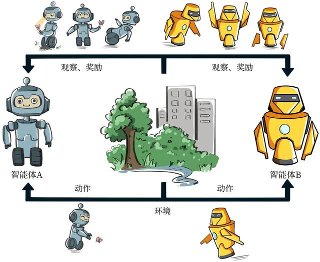
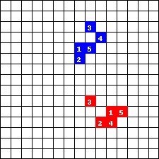
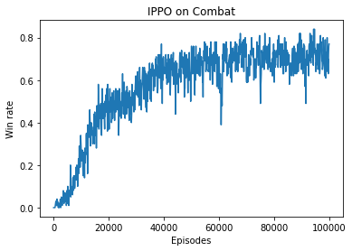

<!DOCTYPE html>
<html>
  <head>
    <meta charset="utf-8" />
    <meta
      name="viewport"
      content="width=device-width, initial-scale=1, maximum-scale=1, minimum-scale=1, user-scalable=no"
    />
    <link
      rel="shortcut icon"
      type="image/x-icon"
      href="https://staticcdn.boyuai.com/user-assets/358/NypsMe6DsDcFyoVc2tDjNB/111.png"
    />
    <style>
      html .__dumi-default-layout-hero {
        padding: 140px 0;
        background: #21144d no-repeat bottom/cover
          url("https://staticcdn.boyuai.com/user-assets/358/2NAGXnoyQSPyymGpswqdt5/hrl-banner.png");
      }
      html .__dumi-default-layout-hero h1 {
        color: #f3f3f3;
        text-shadow: 0 2px 8px rgba(0, 0, 0, 0.3);
      }
      html .__dumi-default-layout-hero .markdown {
        color: #eee;
        text-shadow: 0 2px 5px rgba(0, 0, 0, 0.3);
      }
    </style>
    <link rel="stylesheet" href="./umi.css" />
    <script>
      window.routerBase = "/";
    </script>
    <script>
      //! umi version: 3.5.17
    </script>
    <script>
      var _hmt = _hmt || [];
      (function () {
        var hm = document.createElement("script");
        hm.src = "https://hm.baidu.com/hm.js?3021adc25306a612f9a06ff02644a269";
        var s = document.getElementsByTagName("script")[0];
        s.parentNode.insertBefore(hm, s);
      })();
    </script>
    <script>
      !(function () {
        var e = localStorage.getItem("dumi:prefers-color"),
          t = window.matchMedia("(prefers-color-scheme: dark)").matches,
          r = ["light", "dark", "auto"];
        document.documentElement.setAttribute(
          "data-prefers-color",
          e === r[2] ? (t ? r[1] : r[0]) : r.indexOf(e) > -1 ? e : r[0]
        );
      })();
    </script>
    <title>多智能体强化学习入门 - 动手学强化学习</title>
  </head>
  <body>
    <div id="root"><div class="__dumi-default-layout" data-route="/chapter/3/多智能体强化学习入门" data-show-sidemenu="true" data-show-slugs="true" data-site-mode="true" data-gapless="false"><div class="__dumi-default-navbar" data-mode="site"><button class="__dumi-default-navbar-toggle"></button><a class="__dumi-default-navbar-logo" style="background-image:url(&#x27;https://staticcdn.boyuai.com/user-assets/358/NypsMe6DsDcFyoVc2tDjNB/111.png&#x27;)" href="/">动手学强化学习</a><nav><div class="__dumi-default-search"><input type="search" class="__dumi-default-search-input" value=""/><ul></ul></div><span><a aria-current="page" class="active" href="/chapter">动手学</a></span><span><a href="/slides">课件</a></span><span><a target="_blank" rel="noopener noreferrer" href="https://www.boyuai.com/elites/course/xVqhU42F5IDky94x">视频课程<svg xmlns="http://www.w3.org/2000/svg" aria-hidden="true" x="0px" y="0px" viewBox="0 0 100 100" width="15" height="15" class="__dumi-default-external-link-icon"><path fill="currentColor" d="M18.8,85.1h56l0,0c2.2,0,4-1.8,4-4v-32h-8v28h-48v-48h28v-8h-32l0,0c-2.2,0-4,1.8-4,4v56C14.8,83.3,16.6,85.1,18.8,85.1z"></path><polygon fill="currentColor" points="45.7,48.7 51.3,54.3 77.2,28.5 77.2,37.2 85.2,37.2 85.2,14.9 62.8,14.9 62.8,22.9 71.5,22.9"></polygon></svg></a></span><span><a target="_blank" rel="noopener noreferrer" href="https://item.jd.com/13129509.html">京东链接<svg xmlns="http://www.w3.org/2000/svg" aria-hidden="true" x="0px" y="0px" viewBox="0 0 100 100" width="15" height="15" class="__dumi-default-external-link-icon"><path fill="currentColor" d="M18.8,85.1h56l0,0c2.2,0,4-1.8,4-4v-32h-8v28h-48v-48h28v-8h-32l0,0c-2.2,0-4,1.8-4,4v56C14.8,83.3,16.6,85.1,18.8,85.1z"></path><polygon fill="currentColor" points="45.7,48.7 51.3,54.3 77.2,28.5 77.2,37.2 85.2,37.2 85.2,14.9 62.8,14.9 62.8,22.9 71.5,22.9"></polygon></svg></a></span><span><a target="_blank" rel="noopener noreferrer" href="https://github.com/boyu-ai/Hands-on-RL">GitHub<svg xmlns="http://www.w3.org/2000/svg" aria-hidden="true" x="0px" y="0px" viewBox="0 0 100 100" width="15" height="15" class="__dumi-default-external-link-icon"><path fill="currentColor" d="M18.8,85.1h56l0,0c2.2,0,4-1.8,4-4v-32h-8v28h-48v-48h28v-8h-32l0,0c-2.2,0-4,1.8-4,4v56C14.8,83.3,16.6,85.1,18.8,85.1z"></path><polygon fill="currentColor" points="45.7,48.7 51.3,54.3 77.2,28.5 77.2,37.2 85.2,37.2 85.2,14.9 62.8,14.9 62.8,22.9 71.5,22.9"></polygon></svg></a></span><div class="__dumi-default-navbar-tool"><div class="__dumi-default-dark"><div class="__dumi-default-dark-switch "></div></div></div></nav></div><div class="__dumi-default-menu" data-mode="site"><div class="__dumi-default-menu-inner"><div class="__dumi-default-menu-header"><a class="__dumi-default-menu-logo" style="background-image:url(&#x27;https://staticcdn.boyuai.com/user-assets/358/NypsMe6DsDcFyoVc2tDjNB/111.png&#x27;)" href="/"></a><h1>动手学强化学习</h1><p></p></div><div class="__dumi-default-menu-mobile-area"><ul class="__dumi-default-menu-nav-list"><li><a aria-current="page" class="active" href="/chapter">动手学</a></li><li><a href="/slides">课件</a></li><li><a target="_blank" rel="noopener noreferrer" href="https://www.boyuai.com/elites/course/xVqhU42F5IDky94x">视频课程<svg xmlns="http://www.w3.org/2000/svg" aria-hidden="true" x="0px" y="0px" viewBox="0 0 100 100" width="15" height="15" class="__dumi-default-external-link-icon"><path fill="currentColor" d="M18.8,85.1h56l0,0c2.2,0,4-1.8,4-4v-32h-8v28h-48v-48h28v-8h-32l0,0c-2.2,0-4,1.8-4,4v56C14.8,83.3,16.6,85.1,18.8,85.1z"></path><polygon fill="currentColor" points="45.7,48.7 51.3,54.3 77.2,28.5 77.2,37.2 85.2,37.2 85.2,14.9 62.8,14.9 62.8,22.9 71.5,22.9"></polygon></svg></a></li><li><a target="_blank" rel="noopener noreferrer" href="https://item.jd.com/13129509.html">京东链接<svg xmlns="http://www.w3.org/2000/svg" aria-hidden="true" x="0px" y="0px" viewBox="0 0 100 100" width="15" height="15" class="__dumi-default-external-link-icon"><path fill="currentColor" d="M18.8,85.1h56l0,0c2.2,0,4-1.8,4-4v-32h-8v28h-48v-48h28v-8h-32l0,0c-2.2,0-4,1.8-4,4v56C14.8,83.3,16.6,85.1,18.8,85.1z"></path><polygon fill="currentColor" points="45.7,48.7 51.3,54.3 77.2,28.5 77.2,37.2 85.2,37.2 85.2,14.9 62.8,14.9 62.8,22.9 71.5,22.9"></polygon></svg></a></li><li><a target="_blank" rel="noopener noreferrer" href="https://github.com/boyu-ai/Hands-on-RL">GitHub<svg xmlns="http://www.w3.org/2000/svg" aria-hidden="true" x="0px" y="0px" viewBox="0 0 100 100" width="15" height="15" class="__dumi-default-external-link-icon"><path fill="currentColor" d="M18.8,85.1h56l0,0c2.2,0,4-1.8,4-4v-32h-8v28h-48v-48h28v-8h-32l0,0c-2.2,0-4,1.8-4,4v56C14.8,83.3,16.6,85.1,18.8,85.1z"></path><polygon fill="currentColor" points="45.7,48.7 51.3,54.3 77.2,28.5 77.2,37.2 85.2,37.2 85.2,14.9 62.8,14.9 62.8,22.9 71.5,22.9"></polygon></svg></a></li></ul><div class="__dumi-default-dark"><div class="__dumi-default-dark-switch "><button title="Dark theme" class="__dumi-default-dark-moon "><svg viewBox="0 0 1024 1024" version="1.1" xmlns="http://www.w3.org/2000/svg" p-id="3854" width="22" height="22"><path d="M991.816611 674.909091a69.166545 69.166545 0 0 0-51.665455-23.272727 70.795636 70.795636 0 0 0-27.438545 5.585454A415.674182 415.674182 0 0 1 754.993338 698.181818c-209.594182 0-393.472-184.785455-393.472-395.636363 0-52.363636 38.539636-119.621818 69.515637-173.614546 4.887273-8.610909 9.634909-16.756364 14.103272-24.901818A69.818182 69.818182 0 0 0 384.631156 0a70.842182 70.842182 0 0 0-27.438545 5.585455C161.678429 90.298182 14.362065 307.898182 14.362065 512c0 282.298182 238.824727 512 532.38691 512a522.286545 522.286545 0 0 0 453.957818-268.334545A69.818182 69.818182 0 0 0 991.816611 674.909091zM546.679156 954.181818c-248.785455 0-462.941091-192-462.941091-442.181818 0-186.647273 140.637091-372.829091 300.939637-442.181818-36.817455 65.629091-92.578909 151.970909-92.578909 232.727273 0 250.181818 214.109091 465.454545 462.917818 465.454545a488.331636 488.331636 0 0 0 185.181091-46.545455 453.003636 453.003636 0 0 1-393.565091 232.727273z m103.656728-669.323636l-14.266182 83.781818a34.909091 34.909091 0 0 0 50.362182 36.770909l74.775272-39.563636 74.752 39.563636a36.142545 36.142545 0 0 0 16.174546 3.956364 34.909091 34.909091 0 0 0 34.210909-40.727273l-14.289455-83.781818 60.509091-59.345455a35.025455 35.025455 0 0 0-19.223272-59.578182l-83.61891-12.101818-37.376-76.101818a34.56 34.56 0 0 0-62.254545 0l-37.376 76.101818-83.618909 12.101818a34.909091 34.909091 0 0 0-19.246546 59.578182z m70.423272-64.698182a34.280727 34.280727 0 0 0 26.135273-19.083636l14.312727-29.090909 14.336 29.090909a34.257455 34.257455 0 0 0 26.135273 19.083636l32.046546 4.887273-23.272728 22.574545a35.234909 35.234909 0 0 0-10.007272 30.952727l5.46909 32.116364-28.625454-15.127273a34.490182 34.490182 0 0 0-32.302546 0l-28.695272 15.127273 5.469091-32.116364a35.141818 35.141818 0 0 0-9.984-30.952727l-23.272728-22.574545z" p-id="3855"></path></svg></button><button title="Light theme" class="__dumi-default-dark-sun "><svg viewBox="0 0 1024 1024" version="1.1" xmlns="http://www.w3.org/2000/svg" p-id="4026" width="22" height="22"><path d="M915.2 476.16h-43.968c-24.704 0-44.736 16-44.736 35.84s20.032 35.904 44.736 35.904H915.2c24.768 0 44.8-16.064 44.8-35.904s-20.032-35.84-44.8-35.84zM512 265.6c-136.704 0-246.464 109.824-246.464 246.4 0 136.704 109.76 246.464 246.464 246.464S758.4 648.704 758.4 512c0-136.576-109.696-246.4-246.4-246.4z m0 425.6c-99.008 0-179.2-80.128-179.2-179.2 0-98.944 80.192-179.2 179.2-179.2S691.2 413.056 691.2 512c0 99.072-80.192 179.2-179.2 179.2zM197.44 512c0-19.84-19.136-35.84-43.904-35.84H108.8c-24.768 0-44.8 16-44.8 35.84s20.032 35.904 44.8 35.904h44.736c24.768 0 43.904-16.064 43.904-35.904zM512 198.464c19.776 0 35.84-20.032 35.84-44.8v-44.8C547.84 84.032 531.84 64 512 64s-35.904 20.032-35.904 44.8v44.8c0 24.768 16.128 44.864 35.904 44.864z m0 627.136c-19.776 0-35.904 20.032-35.904 44.8v44.736C476.096 940.032 492.16 960 512 960s35.84-20.032 35.84-44.8v-44.736c0-24.768-16.064-44.864-35.84-44.864z m329.92-592.832c17.472-17.536 20.288-43.072 6.4-57.024-14.016-14.016-39.488-11.2-57.024 6.336-4.736 4.864-26.496 26.496-31.36 31.36-17.472 17.472-20.288 43.008-6.336 57.024 13.952 14.016 39.488 11.2 57.024-6.336 4.8-4.864 26.496-26.56 31.296-31.36zM213.376 759.936c-4.864 4.8-26.56 26.624-31.36 31.36-17.472 17.472-20.288 42.944-6.4 56.96 14.016 13.952 39.552 11.2 57.024-6.336 4.8-4.736 26.56-26.496 31.36-31.36 17.472-17.472 20.288-43.008 6.336-56.96-14.016-13.952-39.552-11.072-56.96 6.336z m19.328-577.92c-17.536-17.536-43.008-20.352-57.024-6.336-14.08 14.016-11.136 39.488 6.336 57.024 4.864 4.864 26.496 26.56 31.36 31.424 17.536 17.408 43.008 20.288 56.96 6.336 14.016-14.016 11.264-39.488-6.336-57.024-4.736-4.864-26.496-26.56-31.296-31.424z m527.168 628.608c4.864 4.864 26.624 26.624 31.36 31.424 17.536 17.408 43.072 20.224 57.088 6.336 13.952-14.016 11.072-39.552-6.4-57.024-4.864-4.8-26.56-26.496-31.36-31.36-17.472-17.408-43.072-20.288-57.024-6.336-13.952 14.016-11.008 39.488 6.336 56.96z" p-id="4027"></path></svg></button><button title="Default to system" class="__dumi-default-dark-auto "><svg viewBox="0 0 1024 1024" version="1.1" xmlns="http://www.w3.org/2000/svg" p-id="11002" width="22" height="22"><path d="M127.658667 492.885333c0-51.882667 10.24-101.717333 30.378666-149.162666s47.786667-88.064 81.92-122.538667 75.093333-61.781333 122.538667-81.92 96.938667-30.378667 149.162667-30.378667 101.717333 10.24 149.162666 30.378667 88.405333 47.786667 122.88 81.92 61.781333 75.093333 81.92 122.538667 30.378667 96.938667 30.378667 149.162666-10.24 101.717333-30.378667 149.162667-47.786667 88.405333-81.92 122.88-75.093333 61.781333-122.88 81.92-97.28 30.378667-149.162666 30.378667-101.717333-10.24-149.162667-30.378667-88.064-47.786667-122.538667-81.92-61.781333-75.093333-81.92-122.88-30.378667-96.938667-30.378666-149.162667z m329.045333 0c0 130.048 13.994667 244.394667 41.984 343.381334h12.970667c46.762667 0 91.136-9.216 133.461333-27.306667s78.848-42.666667 109.568-73.386667 54.954667-67.242667 73.386667-109.568 27.306667-86.698667 27.306666-133.461333c0-46.421333-9.216-90.794667-27.306666-133.12s-42.666667-78.848-73.386667-109.568-67.242667-54.954667-109.568-73.386667-86.698667-27.306667-133.461333-27.306666h-11.605334c-28.672 123.562667-43.349333 237.909333-43.349333 343.722666z" p-id="11003"></path></svg></button></div></div></div><ul class="__dumi-default-menu-list"><li><a href="/chapter/intro">前言</a></li><li><a href="/chapter/1">强化学习基础篇</a><ul><li><a href="/chapter/1/初探强化学习"><span>初探强化学习</span></a></li><li><a href="/chapter/1/多臂老虎机"><span>多臂老虎机</span></a></li><li><a href="/chapter/1/马尔可夫决策过程"><span>马尔可夫决策过程</span></a></li><li><a href="/chapter/1/动态规划算法"><span>动态规划算法</span></a></li><li><a href="/chapter/1/时序差分算法"><span>时序差分算法</span></a></li><li><a href="/chapter/1/dyna-q算法"><span>Dyna-Q算法</span></a></li></ul></li><li><a href="/chapter/2">强化学习进阶篇</a><ul><li><a href="/chapter/2/dqn算法"><span>DQN 算法</span></a></li><li><a href="/chapter/2/dqn改进算法"><span>DQN 改进算法</span></a></li><li><a href="/chapter/2/策略梯度算法"><span>策略梯度算法</span></a></li><li><a href="/chapter/2/actor-critic算法"><span>Actor-Critic 算法</span></a></li><li><a href="/chapter/2/trpo算法"><span>TRPO 算法</span></a></li><li><a href="/chapter/2/ppo算法"><span>PPO 算法</span></a></li><li><a href="/chapter/2/ddpg算法"><span>DDPG 算法</span></a></li><li><a href="/chapter/2/sac算法"><span>SAC 算法</span></a></li></ul></li><li><a aria-current="page" class="active" href="/chapter/3">强化学习前沿篇</a><ul><li><a href="/chapter/3/模仿学习"><span>模仿学习</span></a></li><li><a href="/chapter/3/模型预测控制"><span>模型预测控制</span></a></li><li><a href="/chapter/3/基于模型的策略优化"><span>基于模型的策略优化</span></a></li><li><a href="/chapter/3/离线强化学习"><span>离线强化学习</span></a></li><li><a href="/chapter/3/目标导向的强化学习"><span>目标导向的强化学习</span></a></li><li><a aria-current="page" class="active" href="/chapter/3/多智能体强化学习入门"><span>多智能体强化学习入门</span></a></li><li><a href="/chapter/3/多智能体强化学习进阶"><span>多智能体强化学习进阶</span></a></li></ul></li><li><a href="/chapter/ending">总结与展望</a></li></ul></div></div><ul role="slug-list" class="__dumi-default-layout-toc"><li title="20.1 简介" data-depth="2"><a href="/chapter/3/多智能体强化学习入门#201-简介"><span>20.1 简介</span></a></li><li title="20.2 问题建模" data-depth="2"><a href="/chapter/3/多智能体强化学习入门#202-问题建模"><span>20.2 问题建模</span></a></li><li title="20.3 多智能体强化学习的基本求解范式" data-depth="2"><a href="/chapter/3/多智能体强化学习入门#203-多智能体强化学习的基本求解范式"><span>20.3 多智能体强化学习的基本求解范式</span></a></li><li title="20.4 IPPO 算法" data-depth="2"><a href="/chapter/3/多智能体强化学习入门#204-ippo-算法"><span>20.4 IPPO 算法</span></a></li><li title="20.5 IPPO 代码实践" data-depth="2"><a href="/chapter/3/多智能体强化学习入门#205-ippo-代码实践"><span>20.5 IPPO 代码实践</span></a></li><li title="20.6 小结" data-depth="2"><a href="/chapter/3/多智能体强化学习入门#206-小结"><span>20.6 小结</span></a></li><li title="20.7 参考文献" data-depth="2"><a href="/chapter/3/多智能体强化学习入门#207-参考文献"><span>20.7 参考文献</span></a></li></ul><div class="__dumi-default-layout-content"><div style="float:right"><button style="margin-left:5px;margin-top:7px" text="运行@天池" url="https://tianchi.aliyun.com/notebook-ai/detail?postId=469195" type="button" class="ant-btn"><span>运行@天池</span></button></div><div class="markdown"><h1 id="第-20-章-多智能体强化学习入门"><a aria-hidden="true" tabindex="-1" href="/chapter/3/多智能体强化学习入门#第-20-章-多智能体强化学习入门"><span class="icon icon-link"></span></a>第 20 章 多智能体强化学习入门</h1><h2 id="201-简介"><a aria-hidden="true" tabindex="-1" href="/chapter/3/多智能体强化学习入门#201-简介"><span class="icon icon-link"></span></a>20.1 简介</h2><p>本书之前介绍的算法都是单智能体强化学习算法，其基本假设是动态环境是<strong>稳态的</strong>（stationary），即状态转移概率和奖励函数不变，并依此来设计相应的算法。而如果环境中还有其他智能体做交互和学习，那么任务则上升为<strong>多智能体强化学习</strong>（multi-agent reinforcement learning，MARL），如图 20-1 所示。</p><center></center><center>图20-1 多智能体强化学习环境概览</center><p>多智能体的情形相比于单智能体更加复杂，因为每个智能体在和环境交互的同时也在和其他智能体进行直接或者间接的交互。因此，多智能体强化学习要比单智能体更困难，其难点主要体现在以下几点：</p><ul><li>由于多个智能体在环境中进行实时动态交互，并且每个智能体在不断学习并更新自身策略，因此在每个智能体的视角下，环境是<strong>非稳态的</strong>（non-stationary），即对于一个智能体而言，即使在相同的状态下采取相同的动作，得到的状态转移和奖励信号的分布可能在不断改变；</li><li>多个智能体的训练可能是多目标的，不同智能体需要最大化自己的利益；</li><li>训练评估的复杂度会增加，可能需要大规模分布式训练来提高效率。</li></ul><h2 id="202-问题建模"><a aria-hidden="true" tabindex="-1" href="/chapter/3/多智能体强化学习入门#202-问题建模"><span class="icon icon-link"></span></a>20.2 问题建模</h2><p>将一个多智能体环境用一个元组<span class="math math-inline"><mjx-container className="MathJax" jax="SVG"><svg style="vertical-align:-0.566ex" xmlns="http://www.w3.org/2000/svg" width="14.716ex" height="2.262ex" role="img" focusable="false" viewBox="0 -750 6504.7 1000" xmlns:xlink="http://www.w3.org/1999/xlink"><defs><path id="MJX-1-TEX-N-28" d="M94 250Q94 319 104 381T127 488T164 576T202 643T244 695T277 729T302 750H315H319Q333 750 333 741Q333 738 316 720T275 667T226 581T184 443T167 250T184 58T225 -81T274 -167T316 -220T333 -241Q333 -250 318 -250H315H302L274 -226Q180 -141 137 -14T94 250Z"></path><path id="MJX-1-TEX-I-1D441" d="M234 637Q231 637 226 637Q201 637 196 638T191 649Q191 676 202 682Q204 683 299 683Q376 683 387 683T401 677Q612 181 616 168L670 381Q723 592 723 606Q723 633 659 637Q635 637 635 648Q635 650 637 660Q641 676 643 679T653 683Q656 683 684 682T767 680Q817 680 843 681T873 682Q888 682 888 672Q888 650 880 642Q878 637 858 637Q787 633 769 597L620 7Q618 0 599 0Q585 0 582 2Q579 5 453 305L326 604L261 344Q196 88 196 79Q201 46 268 46H278Q284 41 284 38T282 19Q278 6 272 0H259Q228 2 151 2Q123 2 100 2T63 2T46 1Q31 1 31 10Q31 14 34 26T39 40Q41 46 62 46Q130 49 150 85Q154 91 221 362L289 634Q287 635 234 637Z"></path><path id="MJX-1-TEX-N-2C" d="M78 35T78 60T94 103T137 121Q165 121 187 96T210 8Q210 -27 201 -60T180 -117T154 -158T130 -185T117 -194Q113 -194 104 -185T95 -172Q95 -168 106 -156T131 -126T157 -76T173 -3V9L172 8Q170 7 167 6T161 3T152 1T140 0Q113 0 96 17Z"></path><path id="MJX-1-TEX-C-53" d="M554 512Q536 512 536 522Q536 525 539 539T542 564Q542 588 528 604Q515 616 482 625T410 635Q374 635 349 624T312 594T295 561T290 532Q290 505 303 482T342 442T378 419T409 404Q435 391 451 383T494 357T535 323T562 282T574 231Q574 133 464 56T220 -22Q138 -22 78 21T18 123Q18 184 61 227T156 274Q178 274 178 263Q178 260 177 258Q172 247 164 239T151 227T136 218L127 213L124 202Q118 186 118 163Q120 124 165 86T292 48Q374 48 423 86T473 186V193Q473 267 347 327Q268 364 239 389Q191 431 191 486Q191 547 242 600T356 679T470 705Q472 705 478 705T489 704Q551 704 596 682T642 610Q642 566 621 545Q592 516 554 512Z"></path><path id="MJX-1-TEX-C-41" d="M576 668Q576 688 606 708T660 728Q676 728 675 712V571Q675 409 688 252Q696 122 720 57Q722 53 723 50T728 46T732 43T737 41T743 39L754 45Q788 61 803 61Q819 61 819 47Q818 43 814 35Q799 15 755 -7T675 -30Q659 -30 648 -25T630 -8T621 11T614 34Q603 77 599 106T594 146T591 160V163H460L329 164L316 145Q241 35 196 -7T119 -50T59 -24T30 43Q30 75 46 100T74 125Q81 125 83 120T88 104T96 84Q118 57 151 57Q189 57 277 182Q432 400 542 625L559 659H567Q574 659 575 660T576 668ZM584 249Q579 333 577 386T575 473T574 520V581L563 560Q497 426 412 290L372 228L370 224H371L383 228L393 232H586L584 249Z"></path><path id="MJX-1-TEX-C-52" d="M37 475Q19 475 19 487Q19 503 35 530T83 589T180 647T327 682H374Q387 682 417 682T464 683Q519 683 559 679T642 663T708 625T731 557Q731 481 668 411T504 300Q506 296 512 286T528 257T553 202Q594 105 611 82Q635 47 665 47Q708 47 742 93Q758 113 786 128Q804 136 819 137Q837 137 837 125Q837 115 818 92T767 43T687 -2T589 -22Q549 -22 517 22T467 120T422 221T362 273Q346 273 346 287Q348 301 373 320T436 342Q437 342 446 343T462 345T481 348T504 353T527 362T553 375T577 393Q598 412 614 443T630 511Q630 545 613 566T541 600T393 614Q370 614 370 613L366 584Q349 446 311 307T243 96L213 25Q205 8 179 -7T132 -22Q125 -22 120 -18T117 -8Q117 -5 130 26T163 113T205 239T246 408T274 606V614Q273 614 259 613T231 609T198 602T163 588Q131 572 113 518Q102 502 80 490T37 475Z"></path><path id="MJX-1-TEX-I-1D443" d="M287 628Q287 635 230 637Q206 637 199 638T192 648Q192 649 194 659Q200 679 203 681T397 683Q587 682 600 680Q664 669 707 631T751 530Q751 453 685 389Q616 321 507 303Q500 302 402 301H307L277 182Q247 66 247 59Q247 55 248 54T255 50T272 48T305 46H336Q342 37 342 35Q342 19 335 5Q330 0 319 0Q316 0 282 1T182 2Q120 2 87 2T51 1Q33 1 33 11Q33 13 36 25Q40 41 44 43T67 46Q94 46 127 49Q141 52 146 61Q149 65 218 339T287 628ZM645 554Q645 567 643 575T634 597T609 619T560 635Q553 636 480 637Q463 637 445 637T416 636T404 636Q391 635 386 627Q384 621 367 550T332 412T314 344Q314 342 395 342H407H430Q542 342 590 392Q617 419 631 471T645 554Z"></path><path id="MJX-1-TEX-N-29" d="M60 749L64 750Q69 750 74 750H86L114 726Q208 641 251 514T294 250Q294 182 284 119T261 12T224 -76T186 -143T145 -194T113 -227T90 -246Q87 -249 86 -250H74Q66 -250 63 -250T58 -247T55 -238Q56 -237 66 -225Q221 -64 221 250T66 725Q56 737 55 738Q55 746 60 749Z"></path></defs><g stroke="currentColor" fill="currentColor" stroke-width="0" transform="scale(1,-1)"><g data-mml-node="math"><g data-mml-node="mo"><use data-c="28" xlink:href="#MJX-1-TEX-N-28"></use></g><g data-mml-node="mi" transform="translate(389,0)"><use data-c="1D441" xlink:href="#MJX-1-TEX-I-1D441"></use></g><g data-mml-node="mo" transform="translate(1277,0)"><use data-c="2C" xlink:href="#MJX-1-TEX-N-2C"></use></g><g data-mml-node="TeXAtom" data-mjx-texclass="ORD" transform="translate(1721.7,0)"><g data-mml-node="mi"><use data-c="53" xlink:href="#MJX-1-TEX-C-53"></use></g></g><g data-mml-node="mo" transform="translate(2363.7,0)"><use data-c="2C" xlink:href="#MJX-1-TEX-N-2C"></use></g><g data-mml-node="TeXAtom" data-mjx-texclass="ORD" transform="translate(2808.3,0)"><g data-mml-node="mi"><use data-c="41" xlink:href="#MJX-1-TEX-C-41"></use></g></g><g data-mml-node="mo" transform="translate(3627.3,0)"><use data-c="2C" xlink:href="#MJX-1-TEX-N-2C"></use></g><g data-mml-node="TeXAtom" data-mjx-texclass="ORD" transform="translate(4072,0)"><g data-mml-node="mi"><use data-c="52" xlink:href="#MJX-1-TEX-C-52"></use></g></g><g data-mml-node="mo" transform="translate(4920,0)"><use data-c="2C" xlink:href="#MJX-1-TEX-N-2C"></use></g><g data-mml-node="mi" transform="translate(5364.7,0)"><use data-c="1D443" xlink:href="#MJX-1-TEX-I-1D443"></use></g><g data-mml-node="mo" transform="translate(6115.7,0)"><use data-c="29" xlink:href="#MJX-1-TEX-N-29"></use></g></g></g></svg></mjx-container></span>表示，其中<span class="math math-inline"><mjx-container className="MathJax" jax="SVG"><svg style="vertical-align:0" xmlns="http://www.w3.org/2000/svg" width="2.009ex" height="1.545ex" role="img" focusable="false" viewBox="0 -683 888 683" xmlns:xlink="http://www.w3.org/1999/xlink"><defs><path id="MJX-2-TEX-I-1D441" d="M234 637Q231 637 226 637Q201 637 196 638T191 649Q191 676 202 682Q204 683 299 683Q376 683 387 683T401 677Q612 181 616 168L670 381Q723 592 723 606Q723 633 659 637Q635 637 635 648Q635 650 637 660Q641 676 643 679T653 683Q656 683 684 682T767 680Q817 680 843 681T873 682Q888 682 888 672Q888 650 880 642Q878 637 858 637Q787 633 769 597L620 7Q618 0 599 0Q585 0 582 2Q579 5 453 305L326 604L261 344Q196 88 196 79Q201 46 268 46H278Q284 41 284 38T282 19Q278 6 272 0H259Q228 2 151 2Q123 2 100 2T63 2T46 1Q31 1 31 10Q31 14 34 26T39 40Q41 46 62 46Q130 49 150 85Q154 91 221 362L289 634Q287 635 234 637Z"></path></defs><g stroke="currentColor" fill="currentColor" stroke-width="0" transform="scale(1,-1)"><g data-mml-node="math"><g data-mml-node="mi"><use data-c="1D441" xlink:href="#MJX-2-TEX-I-1D441"></use></g></g></g></svg></mjx-container></span>是智能体的数目，<span class="math math-inline"><mjx-container className="MathJax" jax="SVG"><svg style="vertical-align:-0.339ex" xmlns="http://www.w3.org/2000/svg" width="18.022ex" height="1.934ex" role="img" focusable="false" viewBox="0 -705 7965.9 855" xmlns:xlink="http://www.w3.org/1999/xlink"><defs><path id="MJX-3-TEX-C-53" d="M554 512Q536 512 536 522Q536 525 539 539T542 564Q542 588 528 604Q515 616 482 625T410 635Q374 635 349 624T312 594T295 561T290 532Q290 505 303 482T342 442T378 419T409 404Q435 391 451 383T494 357T535 323T562 282T574 231Q574 133 464 56T220 -22Q138 -22 78 21T18 123Q18 184 61 227T156 274Q178 274 178 263Q178 260 177 258Q172 247 164 239T151 227T136 218L127 213L124 202Q118 186 118 163Q120 124 165 86T292 48Q374 48 423 86T473 186V193Q473 267 347 327Q268 364 239 389Q191 431 191 486Q191 547 242 600T356 679T470 705Q472 705 478 705T489 704Q551 704 596 682T642 610Q642 566 621 545Q592 516 554 512Z"></path><path id="MJX-3-TEX-N-3D" d="M56 347Q56 360 70 367H707Q722 359 722 347Q722 336 708 328L390 327H72Q56 332 56 347ZM56 153Q56 168 72 173H708Q722 163 722 153Q722 140 707 133H70Q56 140 56 153Z"></path><path id="MJX-3-TEX-I-1D446" d="M308 24Q367 24 416 76T466 197Q466 260 414 284Q308 311 278 321T236 341Q176 383 176 462Q176 523 208 573T273 648Q302 673 343 688T407 704H418H425Q521 704 564 640Q565 640 577 653T603 682T623 704Q624 704 627 704T632 705Q645 705 645 698T617 577T585 459T569 456Q549 456 549 465Q549 471 550 475Q550 478 551 494T553 520Q553 554 544 579T526 616T501 641Q465 662 419 662Q362 662 313 616T263 510Q263 480 278 458T319 427Q323 425 389 408T456 390Q490 379 522 342T554 242Q554 216 546 186Q541 164 528 137T492 78T426 18T332 -20Q320 -22 298 -22Q199 -22 144 33L134 44L106 13Q83 -14 78 -18T65 -22Q52 -22 52 -14Q52 -11 110 221Q112 227 130 227H143Q149 221 149 216Q149 214 148 207T144 186T142 153Q144 114 160 87T203 47T255 29T308 24Z"></path><path id="MJX-3-TEX-N-31" d="M213 578L200 573Q186 568 160 563T102 556H83V602H102Q149 604 189 617T245 641T273 663Q275 666 285 666Q294 666 302 660V361L303 61Q310 54 315 52T339 48T401 46H427V0H416Q395 3 257 3Q121 3 100 0H88V46H114Q136 46 152 46T177 47T193 50T201 52T207 57T213 61V578Z"></path><path id="MJX-3-TEX-N-D7" d="M630 29Q630 9 609 9Q604 9 587 25T493 118L389 222L284 117Q178 13 175 11Q171 9 168 9Q160 9 154 15T147 29Q147 36 161 51T255 146L359 250L255 354Q174 435 161 449T147 471Q147 480 153 485T168 490Q173 490 175 489Q178 487 284 383L389 278L493 382Q570 459 587 475T609 491Q630 491 630 471Q630 464 620 453T522 355L418 250L522 145Q606 61 618 48T630 29Z"></path><path id="MJX-3-TEX-N-22EF" d="M78 250Q78 274 95 292T138 310Q162 310 180 294T199 251Q199 226 182 208T139 190T96 207T78 250ZM525 250Q525 274 542 292T585 310Q609 310 627 294T646 251Q646 226 629 208T586 190T543 207T525 250ZM972 250Q972 274 989 292T1032 310Q1056 310 1074 294T1093 251Q1093 226 1076 208T1033 190T990 207T972 250Z"></path><path id="MJX-3-TEX-I-1D441" d="M234 637Q231 637 226 637Q201 637 196 638T191 649Q191 676 202 682Q204 683 299 683Q376 683 387 683T401 677Q612 181 616 168L670 381Q723 592 723 606Q723 633 659 637Q635 637 635 648Q635 650 637 660Q641 676 643 679T653 683Q656 683 684 682T767 680Q817 680 843 681T873 682Q888 682 888 672Q888 650 880 642Q878 637 858 637Q787 633 769 597L620 7Q618 0 599 0Q585 0 582 2Q579 5 453 305L326 604L261 344Q196 88 196 79Q201 46 268 46H278Q284 41 284 38T282 19Q278 6 272 0H259Q228 2 151 2Q123 2 100 2T63 2T46 1Q31 1 31 10Q31 14 34 26T39 40Q41 46 62 46Q130 49 150 85Q154 91 221 362L289 634Q287 635 234 637Z"></path></defs><g stroke="currentColor" fill="currentColor" stroke-width="0" transform="scale(1,-1)"><g data-mml-node="math"><g data-mml-node="TeXAtom" data-mjx-texclass="ORD"><g data-mml-node="mi"><use data-c="53" xlink:href="#MJX-3-TEX-C-53"></use></g></g><g data-mml-node="mo" transform="translate(919.8,0)"><use data-c="3D" xlink:href="#MJX-3-TEX-N-3D"></use></g><g data-mml-node="msub" transform="translate(1975.6,0)"><g data-mml-node="mi"><use data-c="1D446" xlink:href="#MJX-3-TEX-I-1D446"></use></g><g data-mml-node="mn" transform="translate(646,-150) scale(0.707)"><use data-c="31" xlink:href="#MJX-3-TEX-N-31"></use></g></g><g data-mml-node="mo" transform="translate(3247.3,0)"><use data-c="D7" xlink:href="#MJX-3-TEX-N-D7"></use></g><g data-mml-node="mo" transform="translate(4247.6,0)"><use data-c="22EF" xlink:href="#MJX-3-TEX-N-22EF"></use></g><g data-mml-node="mo" transform="translate(5641.8,0)"><use data-c="D7" xlink:href="#MJX-3-TEX-N-D7"></use></g><g data-mml-node="msub" transform="translate(6642,0)"><g data-mml-node="mi"><use data-c="1D446" xlink:href="#MJX-3-TEX-I-1D446"></use></g><g data-mml-node="mi" transform="translate(646,-150) scale(0.707)"><use data-c="1D441" xlink:href="#MJX-3-TEX-I-1D441"></use></g></g></g></g></svg></mjx-container></span>是所有智能体的状态集合，<span class="math math-inline"><mjx-container className="MathJax" jax="SVG"><svg style="vertical-align:-0.339ex" xmlns="http://www.w3.org/2000/svg" width="19.043ex" height="1.986ex" role="img" focusable="false" viewBox="0 -728 8416.9 878" xmlns:xlink="http://www.w3.org/1999/xlink"><defs><path id="MJX-4-TEX-C-41" d="M576 668Q576 688 606 708T660 728Q676 728 675 712V571Q675 409 688 252Q696 122 720 57Q722 53 723 50T728 46T732 43T737 41T743 39L754 45Q788 61 803 61Q819 61 819 47Q818 43 814 35Q799 15 755 -7T675 -30Q659 -30 648 -25T630 -8T621 11T614 34Q603 77 599 106T594 146T591 160V163H460L329 164L316 145Q241 35 196 -7T119 -50T59 -24T30 43Q30 75 46 100T74 125Q81 125 83 120T88 104T96 84Q118 57 151 57Q189 57 277 182Q432 400 542 625L559 659H567Q574 659 575 660T576 668ZM584 249Q579 333 577 386T575 473T574 520V581L563 560Q497 426 412 290L372 228L370 224H371L383 228L393 232H586L584 249Z"></path><path id="MJX-4-TEX-N-3D" d="M56 347Q56 360 70 367H707Q722 359 722 347Q722 336 708 328L390 327H72Q56 332 56 347ZM56 153Q56 168 72 173H708Q722 163 722 153Q722 140 707 133H70Q56 140 56 153Z"></path><path id="MJX-4-TEX-I-1D434" d="M208 74Q208 50 254 46Q272 46 272 35Q272 34 270 22Q267 8 264 4T251 0Q249 0 239 0T205 1T141 2Q70 2 50 0H42Q35 7 35 11Q37 38 48 46H62Q132 49 164 96Q170 102 345 401T523 704Q530 716 547 716H555H572Q578 707 578 706L606 383Q634 60 636 57Q641 46 701 46Q726 46 726 36Q726 34 723 22Q720 7 718 4T704 0Q701 0 690 0T651 1T578 2Q484 2 455 0H443Q437 6 437 9T439 27Q443 40 445 43L449 46H469Q523 49 533 63L521 213H283L249 155Q208 86 208 74ZM516 260Q516 271 504 416T490 562L463 519Q447 492 400 412L310 260L413 259Q516 259 516 260Z"></path><path id="MJX-4-TEX-N-31" d="M213 578L200 573Q186 568 160 563T102 556H83V602H102Q149 604 189 617T245 641T273 663Q275 666 285 666Q294 666 302 660V361L303 61Q310 54 315 52T339 48T401 46H427V0H416Q395 3 257 3Q121 3 100 0H88V46H114Q136 46 152 46T177 47T193 50T201 52T207 57T213 61V578Z"></path><path id="MJX-4-TEX-N-D7" d="M630 29Q630 9 609 9Q604 9 587 25T493 118L389 222L284 117Q178 13 175 11Q171 9 168 9Q160 9 154 15T147 29Q147 36 161 51T255 146L359 250L255 354Q174 435 161 449T147 471Q147 480 153 485T168 490Q173 490 175 489Q178 487 284 383L389 278L493 382Q570 459 587 475T609 491Q630 491 630 471Q630 464 620 453T522 355L418 250L522 145Q606 61 618 48T630 29Z"></path><path id="MJX-4-TEX-N-22EF" d="M78 250Q78 274 95 292T138 310Q162 310 180 294T199 251Q199 226 182 208T139 190T96 207T78 250ZM525 250Q525 274 542 292T585 310Q609 310 627 294T646 251Q646 226 629 208T586 190T543 207T525 250ZM972 250Q972 274 989 292T1032 310Q1056 310 1074 294T1093 251Q1093 226 1076 208T1033 190T990 207T972 250Z"></path><path id="MJX-4-TEX-I-1D441" d="M234 637Q231 637 226 637Q201 637 196 638T191 649Q191 676 202 682Q204 683 299 683Q376 683 387 683T401 677Q612 181 616 168L670 381Q723 592 723 606Q723 633 659 637Q635 637 635 648Q635 650 637 660Q641 676 643 679T653 683Q656 683 684 682T767 680Q817 680 843 681T873 682Q888 682 888 672Q888 650 880 642Q878 637 858 637Q787 633 769 597L620 7Q618 0 599 0Q585 0 582 2Q579 5 453 305L326 604L261 344Q196 88 196 79Q201 46 268 46H278Q284 41 284 38T282 19Q278 6 272 0H259Q228 2 151 2Q123 2 100 2T63 2T46 1Q31 1 31 10Q31 14 34 26T39 40Q41 46 62 46Q130 49 150 85Q154 91 221 362L289 634Q287 635 234 637Z"></path></defs><g stroke="currentColor" fill="currentColor" stroke-width="0" transform="scale(1,-1)"><g data-mml-node="math"><g data-mml-node="TeXAtom" data-mjx-texclass="ORD"><g data-mml-node="mi"><use data-c="41" xlink:href="#MJX-4-TEX-C-41"></use></g></g><g data-mml-node="mo" transform="translate(1096.8,0)"><use data-c="3D" xlink:href="#MJX-4-TEX-N-3D"></use></g><g data-mml-node="msub" transform="translate(2152.6,0)"><g data-mml-node="mi"><use data-c="1D434" xlink:href="#MJX-4-TEX-I-1D434"></use></g><g data-mml-node="mn" transform="translate(783,-150) scale(0.707)"><use data-c="31" xlink:href="#MJX-4-TEX-N-31"></use></g></g><g data-mml-node="mo" transform="translate(3561.3,0)"><use data-c="D7" xlink:href="#MJX-4-TEX-N-D7"></use></g><g data-mml-node="mo" transform="translate(4561.6,0)"><use data-c="22EF" xlink:href="#MJX-4-TEX-N-22EF"></use></g><g data-mml-node="mo" transform="translate(5955.8,0)"><use data-c="D7" xlink:href="#MJX-4-TEX-N-D7"></use></g><g data-mml-node="msub" transform="translate(6956,0)"><g data-mml-node="mi"><use data-c="1D434" xlink:href="#MJX-4-TEX-I-1D434"></use></g><g data-mml-node="mi" transform="translate(783,-150) scale(0.707)"><use data-c="1D441" xlink:href="#MJX-4-TEX-I-1D441"></use></g></g></g></g></svg></mjx-container></span>是所有智能体的动作集合，<span class="math math-inline"><mjx-container className="MathJax" jax="SVG"><svg style="vertical-align:-0.339ex" xmlns="http://www.w3.org/2000/svg" width="17.755ex" height="1.882ex" role="img" focusable="false" viewBox="0 -682 7847.9 832" xmlns:xlink="http://www.w3.org/1999/xlink"><defs><path id="MJX-5-TEX-C-52" d="M37 475Q19 475 19 487Q19 503 35 530T83 589T180 647T327 682H374Q387 682 417 682T464 683Q519 683 559 679T642 663T708 625T731 557Q731 481 668 411T504 300Q506 296 512 286T528 257T553 202Q594 105 611 82Q635 47 665 47Q708 47 742 93Q758 113 786 128Q804 136 819 137Q837 137 837 125Q837 115 818 92T767 43T687 -2T589 -22Q549 -22 517 22T467 120T422 221T362 273Q346 273 346 287Q348 301 373 320T436 342Q437 342 446 343T462 345T481 348T504 353T527 362T553 375T577 393Q598 412 614 443T630 511Q630 545 613 566T541 600T393 614Q370 614 370 613L366 584Q349 446 311 307T243 96L213 25Q205 8 179 -7T132 -22Q125 -22 120 -18T117 -8Q117 -5 130 26T163 113T205 239T246 408T274 606V614Q273 614 259 613T231 609T198 602T163 588Q131 572 113 518Q102 502 80 490T37 475Z"></path><path id="MJX-5-TEX-N-3D" d="M56 347Q56 360 70 367H707Q722 359 722 347Q722 336 708 328L390 327H72Q56 332 56 347ZM56 153Q56 168 72 173H708Q722 163 722 153Q722 140 707 133H70Q56 140 56 153Z"></path><path id="MJX-5-TEX-I-1D45F" d="M21 287Q22 290 23 295T28 317T38 348T53 381T73 411T99 433T132 442Q161 442 183 430T214 408T225 388Q227 382 228 382T236 389Q284 441 347 441H350Q398 441 422 400Q430 381 430 363Q430 333 417 315T391 292T366 288Q346 288 334 299T322 328Q322 376 378 392Q356 405 342 405Q286 405 239 331Q229 315 224 298T190 165Q156 25 151 16Q138 -11 108 -11Q95 -11 87 -5T76 7T74 17Q74 30 114 189T154 366Q154 405 128 405Q107 405 92 377T68 316T57 280Q55 278 41 278H27Q21 284 21 287Z"></path><path id="MJX-5-TEX-N-31" d="M213 578L200 573Q186 568 160 563T102 556H83V602H102Q149 604 189 617T245 641T273 663Q275 666 285 666Q294 666 302 660V361L303 61Q310 54 315 52T339 48T401 46H427V0H416Q395 3 257 3Q121 3 100 0H88V46H114Q136 46 152 46T177 47T193 50T201 52T207 57T213 61V578Z"></path><path id="MJX-5-TEX-N-D7" d="M630 29Q630 9 609 9Q604 9 587 25T493 118L389 222L284 117Q178 13 175 11Q171 9 168 9Q160 9 154 15T147 29Q147 36 161 51T255 146L359 250L255 354Q174 435 161 449T147 471Q147 480 153 485T168 490Q173 490 175 489Q178 487 284 383L389 278L493 382Q570 459 587 475T609 491Q630 491 630 471Q630 464 620 453T522 355L418 250L522 145Q606 61 618 48T630 29Z"></path><path id="MJX-5-TEX-N-22EF" d="M78 250Q78 274 95 292T138 310Q162 310 180 294T199 251Q199 226 182 208T139 190T96 207T78 250ZM525 250Q525 274 542 292T585 310Q609 310 627 294T646 251Q646 226 629 208T586 190T543 207T525 250ZM972 250Q972 274 989 292T1032 310Q1056 310 1074 294T1093 251Q1093 226 1076 208T1033 190T990 207T972 250Z"></path><path id="MJX-5-TEX-I-1D441" d="M234 637Q231 637 226 637Q201 637 196 638T191 649Q191 676 202 682Q204 683 299 683Q376 683 387 683T401 677Q612 181 616 168L670 381Q723 592 723 606Q723 633 659 637Q635 637 635 648Q635 650 637 660Q641 676 643 679T653 683Q656 683 684 682T767 680Q817 680 843 681T873 682Q888 682 888 672Q888 650 880 642Q878 637 858 637Q787 633 769 597L620 7Q618 0 599 0Q585 0 582 2Q579 5 453 305L326 604L261 344Q196 88 196 79Q201 46 268 46H278Q284 41 284 38T282 19Q278 6 272 0H259Q228 2 151 2Q123 2 100 2T63 2T46 1Q31 1 31 10Q31 14 34 26T39 40Q41 46 62 46Q130 49 150 85Q154 91 221 362L289 634Q287 635 234 637Z"></path></defs><g stroke="currentColor" fill="currentColor" stroke-width="0" transform="scale(1,-1)"><g data-mml-node="math"><g data-mml-node="TeXAtom" data-mjx-texclass="ORD"><g data-mml-node="mi"><use data-c="52" xlink:href="#MJX-5-TEX-C-52"></use></g></g><g data-mml-node="mo" transform="translate(1125.8,0)"><use data-c="3D" xlink:href="#MJX-5-TEX-N-3D"></use></g><g data-mml-node="msub" transform="translate(2181.6,0)"><g data-mml-node="mi"><use data-c="1D45F" xlink:href="#MJX-5-TEX-I-1D45F"></use></g><g data-mml-node="mn" transform="translate(484,-150) scale(0.707)"><use data-c="31" xlink:href="#MJX-5-TEX-N-31"></use></g></g><g data-mml-node="mo" transform="translate(3291.3,0)"><use data-c="D7" xlink:href="#MJX-5-TEX-N-D7"></use></g><g data-mml-node="mo" transform="translate(4291.6,0)"><use data-c="22EF" xlink:href="#MJX-5-TEX-N-22EF"></use></g><g data-mml-node="mo" transform="translate(5685.8,0)"><use data-c="D7" xlink:href="#MJX-5-TEX-N-D7"></use></g><g data-mml-node="msub" transform="translate(6686,0)"><g data-mml-node="mi"><use data-c="1D45F" xlink:href="#MJX-5-TEX-I-1D45F"></use></g><g data-mml-node="mi" transform="translate(484,-150) scale(0.707)"><use data-c="1D441" xlink:href="#MJX-5-TEX-I-1D441"></use></g></g></g></g></svg></mjx-container></span>是所有智能体奖励函数的集合，<span class="math math-inline"><mjx-container className="MathJax" jax="SVG"><svg style="vertical-align:0" xmlns="http://www.w3.org/2000/svg" width="1.699ex" height="1.545ex" role="img" focusable="false" viewBox="0 -683 751 683" xmlns:xlink="http://www.w3.org/1999/xlink"><defs><path id="MJX-6-TEX-I-1D443" d="M287 628Q287 635 230 637Q206 637 199 638T192 648Q192 649 194 659Q200 679 203 681T397 683Q587 682 600 680Q664 669 707 631T751 530Q751 453 685 389Q616 321 507 303Q500 302 402 301H307L277 182Q247 66 247 59Q247 55 248 54T255 50T272 48T305 46H336Q342 37 342 35Q342 19 335 5Q330 0 319 0Q316 0 282 1T182 2Q120 2 87 2T51 1Q33 1 33 11Q33 13 36 25Q40 41 44 43T67 46Q94 46 127 49Q141 52 146 61Q149 65 218 339T287 628ZM645 554Q645 567 643 575T634 597T609 619T560 635Q553 636 480 637Q463 637 445 637T416 636T404 636Q391 635 386 627Q384 621 367 550T332 412T314 344Q314 342 395 342H407H430Q542 342 590 392Q617 419 631 471T645 554Z"></path></defs><g stroke="currentColor" fill="currentColor" stroke-width="0" transform="scale(1,-1)"><g data-mml-node="math"><g data-mml-node="mi"><use data-c="1D443" xlink:href="#MJX-6-TEX-I-1D443"></use></g></g></g></svg></mjx-container></span>是环境的状态转移概率。一般多智能体强化学习的目标是为每个智能体学习一个策略来最大化其自身的累积奖励。</p><h2 id="203-多智能体强化学习的基本求解范式"><a aria-hidden="true" tabindex="-1" href="/chapter/3/多智能体强化学习入门#203-多智能体强化学习的基本求解范式"><span class="icon icon-link"></span></a>20.3 多智能体强化学习的基本求解范式</h2><p>面对上述问题形式，最直接的想法是基于已经熟悉的单智能体算法来进行学习，这主要分为两种思路。</p><ul><li><strong>完全中心化</strong>（fully centralized）方法：将多个智能体进行决策当作一个超级智能体在进行决策，即把所有智能体的状态聚合在一起当作一个全局的超级状态，把所有智能体的动作连起来作为一个联合动作。这样做的好处是，由于已经知道了所有智能体的状态和动作，因此对这个超级智能体来说，环境依旧是稳态的，一些单智能体的算法的收敛性依旧可以得到保证。然而，这样的做法不能很好地扩展到智能体数量很多或者环境很大的情况，因为这时候将所有的信息简单暴力地拼在一起会导致维度爆炸，训练复杂度巨幅提升的问题往往不可解决。</li><li><strong>完全去中心化</strong>（fully decentralized）方法：与完全中心化方法相反的范式便是假设每个智能体都在自身的环境中独立地进行学习，不考虑其他智能体的改变。完全去中心化方法直接对每个智能体用一个单智能体强化学习算法来学习。这样做的缺点是环境是非稳态的，训练的收敛性不能得到保证，但是这种方法的好处在于随着智能体数量的增加有比较好的扩展性，不会遇到维度灾难而导致训练不能进行下去。</li></ul><p>本章介绍完全去中心化方法，在原理解读和代码实践之后，进一步通过实验结果图看看这种方法的效果。第 21 章会进一步介绍进阶的多智能体强化学习的求解范式。</p><h2 id="204-ippo-算法"><a aria-hidden="true" tabindex="-1" href="/chapter/3/多智能体强化学习入门#204-ippo-算法"><span class="icon icon-link"></span></a>20.4 IPPO 算法</h2><p>接下来将介绍一个完全去中心化的算法，此类算法被称为<strong>独立学习</strong>（independent learning）。由于对于每个智能体使用单智能体算法 PPO 进行训练，所因此这个算法叫作<strong>独立 PPO</strong>（Independent PPO，IPPO）算法。具体而言，这里使用的 PPO 算法版本为 PPO-截断，其算法流程如下：</p><ul><li>对于<span class="math math-inline"><mjx-container className="MathJax" jax="SVG"><svg style="vertical-align:0" xmlns="http://www.w3.org/2000/svg" width="2.009ex" height="1.545ex" role="img" focusable="false" viewBox="0 -683 888 683" xmlns:xlink="http://www.w3.org/1999/xlink"><defs><path id="MJX-7-TEX-I-1D441" d="M234 637Q231 637 226 637Q201 637 196 638T191 649Q191 676 202 682Q204 683 299 683Q376 683 387 683T401 677Q612 181 616 168L670 381Q723 592 723 606Q723 633 659 637Q635 637 635 648Q635 650 637 660Q641 676 643 679T653 683Q656 683 684 682T767 680Q817 680 843 681T873 682Q888 682 888 672Q888 650 880 642Q878 637 858 637Q787 633 769 597L620 7Q618 0 599 0Q585 0 582 2Q579 5 453 305L326 604L261 344Q196 88 196 79Q201 46 268 46H278Q284 41 284 38T282 19Q278 6 272 0H259Q228 2 151 2Q123 2 100 2T63 2T46 1Q31 1 31 10Q31 14 34 26T39 40Q41 46 62 46Q130 49 150 85Q154 91 221 362L289 634Q287 635 234 637Z"></path></defs><g stroke="currentColor" fill="currentColor" stroke-width="0" transform="scale(1,-1)"><g data-mml-node="math"><g data-mml-node="mi"><use data-c="1D441" xlink:href="#MJX-7-TEX-I-1D441"></use></g></g></g></svg></mjx-container></span>个智能体，为每个智能体初始化各自的策略以及价值函数</li><li><strong>for</strong> 训练轮数 <span class="math math-inline"><mjx-container className="MathJax" jax="SVG"><svg style="vertical-align:-0.439ex" xmlns="http://www.w3.org/2000/svg" width="12.63ex" height="2.009ex" role="img" focusable="false" viewBox="0 -694 5582.6 888" xmlns:xlink="http://www.w3.org/1999/xlink"><defs><path id="MJX-8-TEX-I-1D458" d="M121 647Q121 657 125 670T137 683Q138 683 209 688T282 694Q294 694 294 686Q294 679 244 477Q194 279 194 272Q213 282 223 291Q247 309 292 354T362 415Q402 442 438 442Q468 442 485 423T503 369Q503 344 496 327T477 302T456 291T438 288Q418 288 406 299T394 328Q394 353 410 369T442 390L458 393Q446 405 434 405H430Q398 402 367 380T294 316T228 255Q230 254 243 252T267 246T293 238T320 224T342 206T359 180T365 147Q365 130 360 106T354 66Q354 26 381 26Q429 26 459 145Q461 153 479 153H483Q499 153 499 144Q499 139 496 130Q455 -11 378 -11Q333 -11 305 15T277 90Q277 108 280 121T283 145Q283 167 269 183T234 206T200 217T182 220H180Q168 178 159 139T145 81T136 44T129 20T122 7T111 -2Q98 -11 83 -11Q66 -11 57 -1T48 16Q48 26 85 176T158 471L195 616Q196 629 188 632T149 637H144Q134 637 131 637T124 640T121 647Z"></path><path id="MJX-8-TEX-N-3D" d="M56 347Q56 360 70 367H707Q722 359 722 347Q722 336 708 328L390 327H72Q56 332 56 347ZM56 153Q56 168 72 173H708Q722 163 722 153Q722 140 707 133H70Q56 140 56 153Z"></path><path id="MJX-8-TEX-N-30" d="M96 585Q152 666 249 666Q297 666 345 640T423 548Q460 465 460 320Q460 165 417 83Q397 41 362 16T301 -15T250 -22Q224 -22 198 -16T137 16T82 83Q39 165 39 320Q39 494 96 585ZM321 597Q291 629 250 629Q208 629 178 597Q153 571 145 525T137 333Q137 175 145 125T181 46Q209 16 250 16Q290 16 318 46Q347 76 354 130T362 333Q362 478 354 524T321 597Z"></path><path id="MJX-8-TEX-N-2C" d="M78 35T78 60T94 103T137 121Q165 121 187 96T210 8Q210 -27 201 -60T180 -117T154 -158T130 -185T117 -194Q113 -194 104 -185T95 -172Q95 -168 106 -156T131 -126T157 -76T173 -3V9L172 8Q170 7 167 6T161 3T152 1T140 0Q113 0 96 17Z"></path><path id="MJX-8-TEX-N-31" d="M213 578L200 573Q186 568 160 563T102 556H83V602H102Q149 604 189 617T245 641T273 663Q275 666 285 666Q294 666 302 660V361L303 61Q310 54 315 52T339 48T401 46H427V0H416Q395 3 257 3Q121 3 100 0H88V46H114Q136 46 152 46T177 47T193 50T201 52T207 57T213 61V578Z"></path><path id="MJX-8-TEX-N-32" d="M109 429Q82 429 66 447T50 491Q50 562 103 614T235 666Q326 666 387 610T449 465Q449 422 429 383T381 315T301 241Q265 210 201 149L142 93L218 92Q375 92 385 97Q392 99 409 186V189H449V186Q448 183 436 95T421 3V0H50V19V31Q50 38 56 46T86 81Q115 113 136 137Q145 147 170 174T204 211T233 244T261 278T284 308T305 340T320 369T333 401T340 431T343 464Q343 527 309 573T212 619Q179 619 154 602T119 569T109 550Q109 549 114 549Q132 549 151 535T170 489Q170 464 154 447T109 429Z"></path><path id="MJX-8-TEX-N-2026" d="M78 60Q78 84 95 102T138 120Q162 120 180 104T199 61Q199 36 182 18T139 0T96 17T78 60ZM525 60Q525 84 542 102T585 120Q609 120 627 104T646 61Q646 36 629 18T586 0T543 17T525 60ZM972 60Q972 84 989 102T1032 120Q1056 120 1074 104T1093 61Q1093 36 1076 18T1033 0T990 17T972 60Z"></path></defs><g stroke="currentColor" fill="currentColor" stroke-width="0" transform="scale(1,-1)"><g data-mml-node="math"><g data-mml-node="mi"><use data-c="1D458" xlink:href="#MJX-8-TEX-I-1D458"></use></g><g data-mml-node="mo" transform="translate(798.8,0)"><use data-c="3D" xlink:href="#MJX-8-TEX-N-3D"></use></g><g data-mml-node="mn" transform="translate(1854.6,0)"><use data-c="30" xlink:href="#MJX-8-TEX-N-30"></use></g><g data-mml-node="mo" transform="translate(2354.6,0)"><use data-c="2C" xlink:href="#MJX-8-TEX-N-2C"></use></g><g data-mml-node="mn" transform="translate(2799.2,0)"><use data-c="31" xlink:href="#MJX-8-TEX-N-31"></use></g><g data-mml-node="mo" transform="translate(3299.2,0)"><use data-c="2C" xlink:href="#MJX-8-TEX-N-2C"></use></g><g data-mml-node="mn" transform="translate(3743.9,0)"><use data-c="32" xlink:href="#MJX-8-TEX-N-32"></use></g><g data-mml-node="mo" transform="translate(4410.6,0)"><use data-c="2026" xlink:href="#MJX-8-TEX-N-2026"></use></g></g></g></svg></mjx-container></span> <strong>do</strong></li><li><span class="math math-inline"><mjx-container className="MathJax" jax="SVG"><svg style="vertical-align:0" xmlns="http://www.w3.org/2000/svg" width="2.262ex" height="0.036ex" role="img" focusable="false" viewBox="0 0 1000 16" xmlns:xlink="http://www.w3.org/1999/xlink"><defs></defs><g stroke="currentColor" fill="currentColor" stroke-width="0" transform="scale(1,-1)"><g data-mml-node="math"><g data-mml-node="mstyle"><g data-mml-node="mspace"></g></g></g></g></svg></mjx-container></span>所有智能体在环境中交互分别获得各自的一条轨迹数据</li><li><span class="math math-inline"><mjx-container className="MathJax" jax="SVG"><svg style="vertical-align:0" xmlns="http://www.w3.org/2000/svg" width="2.262ex" height="0.036ex" role="img" focusable="false" viewBox="0 0 1000 16" xmlns:xlink="http://www.w3.org/1999/xlink"><defs></defs><g stroke="currentColor" fill="currentColor" stroke-width="0" transform="scale(1,-1)"><g data-mml-node="math"><g data-mml-node="mstyle"><g data-mml-node="mspace"></g></g></g></g></svg></mjx-container></span>对每个智能体，基于当前的价值函数用 GAE 计算优势函数的估计</li><li><span class="math math-inline"><mjx-container className="MathJax" jax="SVG"><svg style="vertical-align:0" xmlns="http://www.w3.org/2000/svg" width="2.262ex" height="0.036ex" role="img" focusable="false" viewBox="0 0 1000 16" xmlns:xlink="http://www.w3.org/1999/xlink"><defs></defs><g stroke="currentColor" fill="currentColor" stroke-width="0" transform="scale(1,-1)"><g data-mml-node="math"><g data-mml-node="mstyle"><g data-mml-node="mspace"></g></g></g></g></svg></mjx-container></span>对每个智能体，通过最大化其 PPO-截断的目标来更新其策略</li><li><span class="math math-inline"><mjx-container className="MathJax" jax="SVG"><svg style="vertical-align:0" xmlns="http://www.w3.org/2000/svg" width="2.262ex" height="0.036ex" role="img" focusable="false" viewBox="0 0 1000 16" xmlns:xlink="http://www.w3.org/1999/xlink"><defs></defs><g stroke="currentColor" fill="currentColor" stroke-width="0" transform="scale(1,-1)"><g data-mml-node="math"><g data-mml-node="mstyle"><g data-mml-node="mspace"></g></g></g></g></svg></mjx-container></span>对每个智能体，通过均方误差损失函数优化其价值函数</li><li><strong>end for</strong></li></ul><h2 id="205-ippo-代码实践"><a aria-hidden="true" tabindex="-1" href="/chapter/3/多智能体强化学习入门#205-ippo-代码实践"><span class="icon icon-link"></span></a>20.5 IPPO 代码实践</h2><p>下面介绍一下要使用的多智能体环境：<code>ma_gym</code>库中的 Combat 环境。Combat 是一个在二维的格子世界上进行的两个队伍的对战模拟游戏，每个智能体的动作集合为：向四周移动<span class="math math-inline"><mjx-container className="MathJax" jax="SVG"><svg style="vertical-align:0" xmlns="http://www.w3.org/2000/svg" width="1.131ex" height="1.507ex" role="img" focusable="false" viewBox="0 -666 500 666" xmlns:xlink="http://www.w3.org/1999/xlink"><defs><path id="MJX-13-TEX-N-31" d="M213 578L200 573Q186 568 160 563T102 556H83V602H102Q149 604 189 617T245 641T273 663Q275 666 285 666Q294 666 302 660V361L303 61Q310 54 315 52T339 48T401 46H427V0H416Q395 3 257 3Q121 3 100 0H88V46H114Q136 46 152 46T177 47T193 50T201 52T207 57T213 61V578Z"></path></defs><g stroke="currentColor" fill="currentColor" stroke-width="0" transform="scale(1,-1)"><g data-mml-node="math"><g data-mml-node="mn"><use data-c="31" xlink:href="#MJX-13-TEX-N-31"></use></g></g></g></svg></mjx-container></span>格，攻击周围<span class="math math-inline"><mjx-container className="MathJax" jax="SVG"><svg style="vertical-align:-0.05ex" xmlns="http://www.w3.org/2000/svg" width="5.028ex" height="1.554ex" role="img" focusable="false" viewBox="0 -665 2222.4 687" xmlns:xlink="http://www.w3.org/1999/xlink"><defs><path id="MJX-14-TEX-N-33" d="M127 463Q100 463 85 480T69 524Q69 579 117 622T233 665Q268 665 277 664Q351 652 390 611T430 522Q430 470 396 421T302 350L299 348Q299 347 308 345T337 336T375 315Q457 262 457 175Q457 96 395 37T238 -22Q158 -22 100 21T42 130Q42 158 60 175T105 193Q133 193 151 175T169 130Q169 119 166 110T159 94T148 82T136 74T126 70T118 67L114 66Q165 21 238 21Q293 21 321 74Q338 107 338 175V195Q338 290 274 322Q259 328 213 329L171 330L168 332Q166 335 166 348Q166 366 174 366Q202 366 232 371Q266 376 294 413T322 525V533Q322 590 287 612Q265 626 240 626Q208 626 181 615T143 592T132 580H135Q138 579 143 578T153 573T165 566T175 555T183 540T186 520Q186 498 172 481T127 463Z"></path><path id="MJX-14-TEX-N-D7" d="M630 29Q630 9 609 9Q604 9 587 25T493 118L389 222L284 117Q178 13 175 11Q171 9 168 9Q160 9 154 15T147 29Q147 36 161 51T255 146L359 250L255 354Q174 435 161 449T147 471Q147 480 153 485T168 490Q173 490 175 489Q178 487 284 383L389 278L493 382Q570 459 587 475T609 491Q630 491 630 471Q630 464 620 453T522 355L418 250L522 145Q606 61 618 48T630 29Z"></path></defs><g stroke="currentColor" fill="currentColor" stroke-width="0" transform="scale(1,-1)"><g data-mml-node="math"><g data-mml-node="mn"><use data-c="33" xlink:href="#MJX-14-TEX-N-33"></use></g><g data-mml-node="mo" transform="translate(722.2,0)"><use data-c="D7" xlink:href="#MJX-14-TEX-N-D7"></use></g><g data-mml-node="mn" transform="translate(1722.4,0)"><use data-c="33" xlink:href="#MJX-14-TEX-N-33"></use></g></g></g></svg></mjx-container></span>格范围内其他敌对智能体，或者不采取任何行动。起初每个智能体有 3 点生命值，如果智能体在敌人的攻击范围内被攻击到了，则会扣 1 生命值，生命值掉为 0 则死亡，最后存活的队伍获胜。每个智能体的攻击有一轮的冷却时间。</p><p>在游戏中，我们能够控制一个队伍的所有智能体与另一个队伍的智能体对战。另一个队伍的智能体使用固定的算法：攻击在范围内最近的敌人，如果攻击范围内没有敌人，则向敌人靠近。图 20-2 是一个简单的 Combat 环境示例。</p><center></center><center>图20-2 Combat 环境示例</center><p>首先仍然导入一些需要用到的包，然后从 GitHub 中克隆<code>ma-gym</code>仓库到本地，并且导入其中的 Combat 环境。</p><div class="__dumi-default-code-block"><pre class="prism-code language-python"><button class="__dumi-default-icon __dumi-default-code-block-copy-btn" data-status="ready"></button><div class="token-line"><span class="token keyword">import</span><span class="token plain"> torch</span></div><div class="token-line"><span class="token plain"></span><span class="token keyword">import</span><span class="token plain"> torch</span><span class="token punctuation">.</span><span class="token plain">nn</span><span class="token punctuation">.</span><span class="token plain">functional </span><span class="token keyword">as</span><span class="token plain"> F</span></div><div class="token-line"><span class="token plain"></span><span class="token keyword">import</span><span class="token plain"> numpy </span><span class="token keyword">as</span><span class="token plain"> np</span></div><div class="token-line"><span class="token plain"></span><span class="token keyword">import</span><span class="token plain"> rl_utils</span></div><div class="token-line"><span class="token plain"></span><span class="token keyword">from</span><span class="token plain"> tqdm </span><span class="token keyword">import</span><span class="token plain"> tqdm</span></div><div class="token-line"><span class="token plain"></span><span class="token keyword">import</span><span class="token plain"> matplotlib</span><span class="token punctuation">.</span><span class="token plain">pyplot </span><span class="token keyword">as</span><span class="token plain"> plt</span></div><div class="token-line"><span class="token plain">
</span></div><div class="token-line"><span class="token plain">! git clone https</span><span class="token punctuation">:</span><span class="token operator">//</span><span class="token plain">github</span><span class="token punctuation">.</span><span class="token plain">com</span><span class="token operator">/</span><span class="token plain">boyu</span><span class="token operator">-</span><span class="token plain">ai</span><span class="token operator">/</span><span class="token plain">ma</span><span class="token operator">-</span><span class="token plain">gym</span><span class="token punctuation">.</span><span class="token plain">git</span></div><div class="token-line"><span class="token plain"></span><span class="token keyword">import</span><span class="token plain"> sys</span></div><div class="token-line"><span class="token plain">sys</span><span class="token punctuation">.</span><span class="token plain">path</span><span class="token punctuation">.</span><span class="token plain">append</span><span class="token punctuation">(</span><span class="token string">&quot;./ma-gym&quot;</span><span class="token punctuation">)</span><span class="token plain"></span></div><div class="token-line"><span class="token plain"></span><span class="token keyword">from</span><span class="token plain"> ma_gym</span><span class="token punctuation">.</span><span class="token plain">envs</span><span class="token punctuation">.</span><span class="token plain">combat</span><span class="token punctuation">.</span><span class="token plain">combat </span><span class="token keyword">import</span><span class="token plain"> Combat</span></div></pre></div><div class="__dumi-default-code-block"><pre class="prism-code language-unknown"><button class="__dumi-default-icon __dumi-default-code-block-copy-btn" data-status="ready"></button><div class="token-line"><span class="token plain">Cloning into &#x27;ma-gym&#x27;...</span></div><div class="token-line"><span class="token plain">remote: Enumerating objects: 1072, done.</span></div><div class="token-line"><span class="token plain">remote: Counting objects: 100% (141/141), done.</span></div><div class="token-line"><span class="token plain">remote: Compressing objects: 100% (131/131), done.</span></div><div class="token-line"><span class="token plain">remote: Total 1072 (delta 61), reused 31 (delta 6), pack-reused 931</span></div><div class="token-line"><span class="token plain">Receiving objects: 100% (1072/1072), 3.74 MiB | 4.47 MiB/s, done.</span></div><div class="token-line"><span class="token plain">Resolving deltas: 100% (524/524), done.</span></div></pre></div><p>接下来的代码块与 12.4 节介绍过的 PPO 代码实践基本一致，不再赘述。</p><div class="__dumi-default-code-block"><pre class="prism-code language-python"><button class="__dumi-default-icon __dumi-default-code-block-copy-btn" data-status="ready"></button><div class="token-line"><span class="token keyword">class</span><span class="token plain"> </span><span class="token class-name">PolicyNet</span><span class="token punctuation">(</span><span class="token plain">torch</span><span class="token punctuation">.</span><span class="token plain">nn</span><span class="token punctuation">.</span><span class="token plain">Module</span><span class="token punctuation">)</span><span class="token punctuation">:</span><span class="token plain"></span></div><div class="token-line"><span class="token plain">    </span><span class="token keyword">def</span><span class="token plain"> </span><span class="token function">__init__</span><span class="token punctuation">(</span><span class="token plain">self</span><span class="token punctuation">,</span><span class="token plain"> state_dim</span><span class="token punctuation">,</span><span class="token plain"> hidden_dim</span><span class="token punctuation">,</span><span class="token plain"> action_dim</span><span class="token punctuation">)</span><span class="token punctuation">:</span><span class="token plain"></span></div><div class="token-line"><span class="token plain">        </span><span class="token builtin">super</span><span class="token punctuation">(</span><span class="token plain">PolicyNet</span><span class="token punctuation">,</span><span class="token plain"> self</span><span class="token punctuation">)</span><span class="token punctuation">.</span><span class="token plain">__init__</span><span class="token punctuation">(</span><span class="token punctuation">)</span><span class="token plain"></span></div><div class="token-line"><span class="token plain">        self</span><span class="token punctuation">.</span><span class="token plain">fc1 </span><span class="token operator">=</span><span class="token plain"> torch</span><span class="token punctuation">.</span><span class="token plain">nn</span><span class="token punctuation">.</span><span class="token plain">Linear</span><span class="token punctuation">(</span><span class="token plain">state_dim</span><span class="token punctuation">,</span><span class="token plain"> hidden_dim</span><span class="token punctuation">)</span><span class="token plain"></span></div><div class="token-line"><span class="token plain">        self</span><span class="token punctuation">.</span><span class="token plain">fc2 </span><span class="token operator">=</span><span class="token plain"> torch</span><span class="token punctuation">.</span><span class="token plain">nn</span><span class="token punctuation">.</span><span class="token plain">Linear</span><span class="token punctuation">(</span><span class="token plain">hidden_dim</span><span class="token punctuation">,</span><span class="token plain"> hidden_dim</span><span class="token punctuation">)</span><span class="token plain"></span></div><div class="token-line"><span class="token plain">        self</span><span class="token punctuation">.</span><span class="token plain">fc3 </span><span class="token operator">=</span><span class="token plain"> torch</span><span class="token punctuation">.</span><span class="token plain">nn</span><span class="token punctuation">.</span><span class="token plain">Linear</span><span class="token punctuation">(</span><span class="token plain">hidden_dim</span><span class="token punctuation">,</span><span class="token plain"> action_dim</span><span class="token punctuation">)</span><span class="token plain"></span></div><div class="token-line"><span class="token plain">
</span></div><div class="token-line"><span class="token plain">    </span><span class="token keyword">def</span><span class="token plain"> </span><span class="token function">forward</span><span class="token punctuation">(</span><span class="token plain">self</span><span class="token punctuation">,</span><span class="token plain"> x</span><span class="token punctuation">)</span><span class="token punctuation">:</span><span class="token plain"></span></div><div class="token-line"><span class="token plain">        x </span><span class="token operator">=</span><span class="token plain"> F</span><span class="token punctuation">.</span><span class="token plain">relu</span><span class="token punctuation">(</span><span class="token plain">self</span><span class="token punctuation">.</span><span class="token plain">fc2</span><span class="token punctuation">(</span><span class="token plain">F</span><span class="token punctuation">.</span><span class="token plain">relu</span><span class="token punctuation">(</span><span class="token plain">self</span><span class="token punctuation">.</span><span class="token plain">fc1</span><span class="token punctuation">(</span><span class="token plain">x</span><span class="token punctuation">)</span><span class="token punctuation">)</span><span class="token punctuation">)</span><span class="token punctuation">)</span><span class="token plain"></span></div><div class="token-line"><span class="token plain">        </span><span class="token keyword">return</span><span class="token plain"> F</span><span class="token punctuation">.</span><span class="token plain">softmax</span><span class="token punctuation">(</span><span class="token plain">self</span><span class="token punctuation">.</span><span class="token plain">fc3</span><span class="token punctuation">(</span><span class="token plain">x</span><span class="token punctuation">)</span><span class="token punctuation">,</span><span class="token plain"> dim</span><span class="token operator">=</span><span class="token number">1</span><span class="token punctuation">)</span><span class="token plain"></span></div><div class="token-line"><span class="token plain">
</span></div><div class="token-line"><span class="token plain">
</span></div><div class="token-line"><span class="token plain"></span><span class="token keyword">class</span><span class="token plain"> </span><span class="token class-name">ValueNet</span><span class="token punctuation">(</span><span class="token plain">torch</span><span class="token punctuation">.</span><span class="token plain">nn</span><span class="token punctuation">.</span><span class="token plain">Module</span><span class="token punctuation">)</span><span class="token punctuation">:</span><span class="token plain"></span></div><div class="token-line"><span class="token plain">    </span><span class="token keyword">def</span><span class="token plain"> </span><span class="token function">__init__</span><span class="token punctuation">(</span><span class="token plain">self</span><span class="token punctuation">,</span><span class="token plain"> state_dim</span><span class="token punctuation">,</span><span class="token plain"> hidden_dim</span><span class="token punctuation">)</span><span class="token punctuation">:</span><span class="token plain"></span></div><div class="token-line"><span class="token plain">        </span><span class="token builtin">super</span><span class="token punctuation">(</span><span class="token plain">ValueNet</span><span class="token punctuation">,</span><span class="token plain"> self</span><span class="token punctuation">)</span><span class="token punctuation">.</span><span class="token plain">__init__</span><span class="token punctuation">(</span><span class="token punctuation">)</span><span class="token plain"></span></div><div class="token-line"><span class="token plain">        self</span><span class="token punctuation">.</span><span class="token plain">fc1 </span><span class="token operator">=</span><span class="token plain"> torch</span><span class="token punctuation">.</span><span class="token plain">nn</span><span class="token punctuation">.</span><span class="token plain">Linear</span><span class="token punctuation">(</span><span class="token plain">state_dim</span><span class="token punctuation">,</span><span class="token plain"> hidden_dim</span><span class="token punctuation">)</span><span class="token plain"></span></div><div class="token-line"><span class="token plain">        self</span><span class="token punctuation">.</span><span class="token plain">fc2 </span><span class="token operator">=</span><span class="token plain"> torch</span><span class="token punctuation">.</span><span class="token plain">nn</span><span class="token punctuation">.</span><span class="token plain">Linear</span><span class="token punctuation">(</span><span class="token plain">hidden_dim</span><span class="token punctuation">,</span><span class="token plain"> hidden_dim</span><span class="token punctuation">)</span><span class="token plain"></span></div><div class="token-line"><span class="token plain">        self</span><span class="token punctuation">.</span><span class="token plain">fc3 </span><span class="token operator">=</span><span class="token plain"> torch</span><span class="token punctuation">.</span><span class="token plain">nn</span><span class="token punctuation">.</span><span class="token plain">Linear</span><span class="token punctuation">(</span><span class="token plain">hidden_dim</span><span class="token punctuation">,</span><span class="token plain"> </span><span class="token number">1</span><span class="token punctuation">)</span><span class="token plain"></span></div><div class="token-line"><span class="token plain">
</span></div><div class="token-line"><span class="token plain">    </span><span class="token keyword">def</span><span class="token plain"> </span><span class="token function">forward</span><span class="token punctuation">(</span><span class="token plain">self</span><span class="token punctuation">,</span><span class="token plain"> x</span><span class="token punctuation">)</span><span class="token punctuation">:</span><span class="token plain"></span></div><div class="token-line"><span class="token plain">        x </span><span class="token operator">=</span><span class="token plain"> F</span><span class="token punctuation">.</span><span class="token plain">relu</span><span class="token punctuation">(</span><span class="token plain">self</span><span class="token punctuation">.</span><span class="token plain">fc2</span><span class="token punctuation">(</span><span class="token plain">F</span><span class="token punctuation">.</span><span class="token plain">relu</span><span class="token punctuation">(</span><span class="token plain">self</span><span class="token punctuation">.</span><span class="token plain">fc1</span><span class="token punctuation">(</span><span class="token plain">x</span><span class="token punctuation">)</span><span class="token punctuation">)</span><span class="token punctuation">)</span><span class="token punctuation">)</span><span class="token plain"></span></div><div class="token-line"><span class="token plain">        </span><span class="token keyword">return</span><span class="token plain"> self</span><span class="token punctuation">.</span><span class="token plain">fc3</span><span class="token punctuation">(</span><span class="token plain">x</span><span class="token punctuation">)</span><span class="token plain"></span></div><div class="token-line"><span class="token plain">
</span></div><div class="token-line"><span class="token plain">
</span></div><div class="token-line"><span class="token plain"></span><span class="token keyword">class</span><span class="token plain"> </span><span class="token class-name">PPO</span><span class="token punctuation">:</span><span class="token plain"></span></div><div class="token-line"><span class="token plain">    </span><span class="token triple-quoted-string string">&#x27;&#x27;&#x27; PPO算法,采用截断方式 &#x27;&#x27;&#x27;</span><span class="token plain"></span></div><div class="token-line"><span class="token plain">    </span><span class="token keyword">def</span><span class="token plain"> </span><span class="token function">__init__</span><span class="token punctuation">(</span><span class="token plain">self</span><span class="token punctuation">,</span><span class="token plain"> state_dim</span><span class="token punctuation">,</span><span class="token plain"> hidden_dim</span><span class="token punctuation">,</span><span class="token plain"> action_dim</span><span class="token punctuation">,</span><span class="token plain"> actor_lr</span><span class="token punctuation">,</span><span class="token plain"> critic_lr</span><span class="token punctuation">,</span><span class="token plain"></span></div><div class="token-line"><span class="token plain">                 lmbda</span><span class="token punctuation">,</span><span class="token plain"> eps</span><span class="token punctuation">,</span><span class="token plain"> gamma</span><span class="token punctuation">,</span><span class="token plain"> device</span><span class="token punctuation">)</span><span class="token punctuation">:</span><span class="token plain"></span></div><div class="token-line"><span class="token plain">        self</span><span class="token punctuation">.</span><span class="token plain">actor </span><span class="token operator">=</span><span class="token plain"> PolicyNet</span><span class="token punctuation">(</span><span class="token plain">state_dim</span><span class="token punctuation">,</span><span class="token plain"> hidden_dim</span><span class="token punctuation">,</span><span class="token plain"> action_dim</span><span class="token punctuation">)</span><span class="token punctuation">.</span><span class="token plain">to</span><span class="token punctuation">(</span><span class="token plain">device</span><span class="token punctuation">)</span><span class="token plain"></span></div><div class="token-line"><span class="token plain">        self</span><span class="token punctuation">.</span><span class="token plain">critic </span><span class="token operator">=</span><span class="token plain"> ValueNet</span><span class="token punctuation">(</span><span class="token plain">state_dim</span><span class="token punctuation">,</span><span class="token plain"> hidden_dim</span><span class="token punctuation">)</span><span class="token punctuation">.</span><span class="token plain">to</span><span class="token punctuation">(</span><span class="token plain">device</span><span class="token punctuation">)</span><span class="token plain"></span></div><div class="token-line"><span class="token plain">        self</span><span class="token punctuation">.</span><span class="token plain">actor_optimizer </span><span class="token operator">=</span><span class="token plain"> torch</span><span class="token punctuation">.</span><span class="token plain">optim</span><span class="token punctuation">.</span><span class="token plain">Adam</span><span class="token punctuation">(</span><span class="token plain">self</span><span class="token punctuation">.</span><span class="token plain">actor</span><span class="token punctuation">.</span><span class="token plain">parameters</span><span class="token punctuation">(</span><span class="token punctuation">)</span><span class="token punctuation">,</span><span class="token plain"></span></div><div class="token-line"><span class="token plain">                                                lr</span><span class="token operator">=</span><span class="token plain">actor_lr</span><span class="token punctuation">)</span><span class="token plain"></span></div><div class="token-line"><span class="token plain">        self</span><span class="token punctuation">.</span><span class="token plain">critic_optimizer </span><span class="token operator">=</span><span class="token plain"> torch</span><span class="token punctuation">.</span><span class="token plain">optim</span><span class="token punctuation">.</span><span class="token plain">Adam</span><span class="token punctuation">(</span><span class="token plain">self</span><span class="token punctuation">.</span><span class="token plain">critic</span><span class="token punctuation">.</span><span class="token plain">parameters</span><span class="token punctuation">(</span><span class="token punctuation">)</span><span class="token punctuation">,</span><span class="token plain"></span></div><div class="token-line"><span class="token plain">                                                 lr</span><span class="token operator">=</span><span class="token plain">critic_lr</span><span class="token punctuation">)</span><span class="token plain"></span></div><div class="token-line"><span class="token plain">        self</span><span class="token punctuation">.</span><span class="token plain">gamma </span><span class="token operator">=</span><span class="token plain"> gamma</span></div><div class="token-line"><span class="token plain">        self</span><span class="token punctuation">.</span><span class="token plain">lmbda </span><span class="token operator">=</span><span class="token plain"> lmbda</span></div><div class="token-line"><span class="token plain">        self</span><span class="token punctuation">.</span><span class="token plain">eps </span><span class="token operator">=</span><span class="token plain"> eps  </span><span class="token comment"># PPO中截断范围的参数</span><span class="token plain"></span></div><div class="token-line"><span class="token plain">        self</span><span class="token punctuation">.</span><span class="token plain">device </span><span class="token operator">=</span><span class="token plain"> device</span></div><div class="token-line"><span class="token plain">
</span></div><div class="token-line"><span class="token plain">    </span><span class="token keyword">def</span><span class="token plain"> </span><span class="token function">take_action</span><span class="token punctuation">(</span><span class="token plain">self</span><span class="token punctuation">,</span><span class="token plain"> state</span><span class="token punctuation">)</span><span class="token punctuation">:</span><span class="token plain"></span></div><div class="token-line"><span class="token plain">        state </span><span class="token operator">=</span><span class="token plain"> torch</span><span class="token punctuation">.</span><span class="token plain">tensor</span><span class="token punctuation">(</span><span class="token punctuation">[</span><span class="token plain">state</span><span class="token punctuation">]</span><span class="token punctuation">,</span><span class="token plain"> dtype</span><span class="token operator">=</span><span class="token plain">torch</span><span class="token punctuation">.</span><span class="token builtin">float</span><span class="token punctuation">)</span><span class="token punctuation">.</span><span class="token plain">to</span><span class="token punctuation">(</span><span class="token plain">self</span><span class="token punctuation">.</span><span class="token plain">device</span><span class="token punctuation">)</span><span class="token plain"></span></div><div class="token-line"><span class="token plain">        probs </span><span class="token operator">=</span><span class="token plain"> self</span><span class="token punctuation">.</span><span class="token plain">actor</span><span class="token punctuation">(</span><span class="token plain">state</span><span class="token punctuation">)</span><span class="token plain"></span></div><div class="token-line"><span class="token plain">        action_dist </span><span class="token operator">=</span><span class="token plain"> torch</span><span class="token punctuation">.</span><span class="token plain">distributions</span><span class="token punctuation">.</span><span class="token plain">Categorical</span><span class="token punctuation">(</span><span class="token plain">probs</span><span class="token punctuation">)</span><span class="token plain"></span></div><div class="token-line"><span class="token plain">        action </span><span class="token operator">=</span><span class="token plain"> action_dist</span><span class="token punctuation">.</span><span class="token plain">sample</span><span class="token punctuation">(</span><span class="token punctuation">)</span><span class="token plain"></span></div><div class="token-line"><span class="token plain">        </span><span class="token keyword">return</span><span class="token plain"> action</span><span class="token punctuation">.</span><span class="token plain">item</span><span class="token punctuation">(</span><span class="token punctuation">)</span><span class="token plain"></span></div><div class="token-line"><span class="token plain">
</span></div><div class="token-line"><span class="token plain">    </span><span class="token keyword">def</span><span class="token plain"> </span><span class="token function">update</span><span class="token punctuation">(</span><span class="token plain">self</span><span class="token punctuation">,</span><span class="token plain"> transition_dict</span><span class="token punctuation">)</span><span class="token punctuation">:</span><span class="token plain"></span></div><div class="token-line"><span class="token plain">        states </span><span class="token operator">=</span><span class="token plain"> torch</span><span class="token punctuation">.</span><span class="token plain">tensor</span><span class="token punctuation">(</span><span class="token plain">transition_dict</span><span class="token punctuation">[</span><span class="token string">&#x27;states&#x27;</span><span class="token punctuation">]</span><span class="token punctuation">,</span><span class="token plain"></span></div><div class="token-line"><span class="token plain">                              dtype</span><span class="token operator">=</span><span class="token plain">torch</span><span class="token punctuation">.</span><span class="token builtin">float</span><span class="token punctuation">)</span><span class="token punctuation">.</span><span class="token plain">to</span><span class="token punctuation">(</span><span class="token plain">self</span><span class="token punctuation">.</span><span class="token plain">device</span><span class="token punctuation">)</span><span class="token plain"></span></div><div class="token-line"><span class="token plain">        actions </span><span class="token operator">=</span><span class="token plain"> torch</span><span class="token punctuation">.</span><span class="token plain">tensor</span><span class="token punctuation">(</span><span class="token plain">transition_dict</span><span class="token punctuation">[</span><span class="token string">&#x27;actions&#x27;</span><span class="token punctuation">]</span><span class="token punctuation">)</span><span class="token punctuation">.</span><span class="token plain">view</span><span class="token punctuation">(</span><span class="token operator">-</span><span class="token number">1</span><span class="token punctuation">,</span><span class="token plain"> </span><span class="token number">1</span><span class="token punctuation">)</span><span class="token punctuation">.</span><span class="token plain">to</span><span class="token punctuation">(</span><span class="token plain"></span></div><div class="token-line"><span class="token plain">            self</span><span class="token punctuation">.</span><span class="token plain">device</span><span class="token punctuation">)</span><span class="token plain"></span></div><div class="token-line"><span class="token plain">        rewards </span><span class="token operator">=</span><span class="token plain"> torch</span><span class="token punctuation">.</span><span class="token plain">tensor</span><span class="token punctuation">(</span><span class="token plain">transition_dict</span><span class="token punctuation">[</span><span class="token string">&#x27;rewards&#x27;</span><span class="token punctuation">]</span><span class="token punctuation">,</span><span class="token plain"></span></div><div class="token-line"><span class="token plain">                               dtype</span><span class="token operator">=</span><span class="token plain">torch</span><span class="token punctuation">.</span><span class="token builtin">float</span><span class="token punctuation">)</span><span class="token punctuation">.</span><span class="token plain">view</span><span class="token punctuation">(</span><span class="token operator">-</span><span class="token number">1</span><span class="token punctuation">,</span><span class="token plain"> </span><span class="token number">1</span><span class="token punctuation">)</span><span class="token punctuation">.</span><span class="token plain">to</span><span class="token punctuation">(</span><span class="token plain">self</span><span class="token punctuation">.</span><span class="token plain">device</span><span class="token punctuation">)</span><span class="token plain"></span></div><div class="token-line"><span class="token plain">        next_states </span><span class="token operator">=</span><span class="token plain"> torch</span><span class="token punctuation">.</span><span class="token plain">tensor</span><span class="token punctuation">(</span><span class="token plain">transition_dict</span><span class="token punctuation">[</span><span class="token string">&#x27;next_states&#x27;</span><span class="token punctuation">]</span><span class="token punctuation">,</span><span class="token plain"></span></div><div class="token-line"><span class="token plain">                                   dtype</span><span class="token operator">=</span><span class="token plain">torch</span><span class="token punctuation">.</span><span class="token builtin">float</span><span class="token punctuation">)</span><span class="token punctuation">.</span><span class="token plain">to</span><span class="token punctuation">(</span><span class="token plain">self</span><span class="token punctuation">.</span><span class="token plain">device</span><span class="token punctuation">)</span><span class="token plain"></span></div><div class="token-line"><span class="token plain">        dones </span><span class="token operator">=</span><span class="token plain"> torch</span><span class="token punctuation">.</span><span class="token plain">tensor</span><span class="token punctuation">(</span><span class="token plain">transition_dict</span><span class="token punctuation">[</span><span class="token string">&#x27;dones&#x27;</span><span class="token punctuation">]</span><span class="token punctuation">,</span><span class="token plain"></span></div><div class="token-line"><span class="token plain">                             dtype</span><span class="token operator">=</span><span class="token plain">torch</span><span class="token punctuation">.</span><span class="token builtin">float</span><span class="token punctuation">)</span><span class="token punctuation">.</span><span class="token plain">view</span><span class="token punctuation">(</span><span class="token operator">-</span><span class="token number">1</span><span class="token punctuation">,</span><span class="token plain"> </span><span class="token number">1</span><span class="token punctuation">)</span><span class="token punctuation">.</span><span class="token plain">to</span><span class="token punctuation">(</span><span class="token plain">self</span><span class="token punctuation">.</span><span class="token plain">device</span><span class="token punctuation">)</span><span class="token plain"></span></div><div class="token-line"><span class="token plain">        td_target </span><span class="token operator">=</span><span class="token plain"> rewards </span><span class="token operator">+</span><span class="token plain"> self</span><span class="token punctuation">.</span><span class="token plain">gamma </span><span class="token operator">*</span><span class="token plain"> self</span><span class="token punctuation">.</span><span class="token plain">critic</span><span class="token punctuation">(</span><span class="token plain">next_states</span><span class="token punctuation">)</span><span class="token plain"> </span><span class="token operator">*</span><span class="token plain"> </span><span class="token punctuation">(</span><span class="token number">1</span><span class="token plain"> </span><span class="token operator">-</span><span class="token plain"></span></div><div class="token-line"><span class="token plain">                                                                       dones</span><span class="token punctuation">)</span><span class="token plain"></span></div><div class="token-line"><span class="token plain">        td_delta </span><span class="token operator">=</span><span class="token plain"> td_target </span><span class="token operator">-</span><span class="token plain"> self</span><span class="token punctuation">.</span><span class="token plain">critic</span><span class="token punctuation">(</span><span class="token plain">states</span><span class="token punctuation">)</span><span class="token plain"></span></div><div class="token-line"><span class="token plain">        advantage </span><span class="token operator">=</span><span class="token plain"> rl_utils</span><span class="token punctuation">.</span><span class="token plain">compute_advantage</span><span class="token punctuation">(</span><span class="token plain">self</span><span class="token punctuation">.</span><span class="token plain">gamma</span><span class="token punctuation">,</span><span class="token plain"> self</span><span class="token punctuation">.</span><span class="token plain">lmbda</span><span class="token punctuation">,</span><span class="token plain"></span></div><div class="token-line"><span class="token plain">                                               td_delta</span><span class="token punctuation">.</span><span class="token plain">cpu</span><span class="token punctuation">(</span><span class="token punctuation">)</span><span class="token punctuation">)</span><span class="token punctuation">.</span><span class="token plain">to</span><span class="token punctuation">(</span><span class="token plain">self</span><span class="token punctuation">.</span><span class="token plain">device</span><span class="token punctuation">)</span><span class="token plain"></span></div><div class="token-line"><span class="token plain">        old_log_probs </span><span class="token operator">=</span><span class="token plain"> torch</span><span class="token punctuation">.</span><span class="token plain">log</span><span class="token punctuation">(</span><span class="token plain">self</span><span class="token punctuation">.</span><span class="token plain">actor</span><span class="token punctuation">(</span><span class="token plain">states</span><span class="token punctuation">)</span><span class="token punctuation">.</span><span class="token plain">gather</span><span class="token punctuation">(</span><span class="token number">1</span><span class="token punctuation">,</span><span class="token plain"></span></div><div class="token-line"><span class="token plain">                                                            actions</span><span class="token punctuation">)</span><span class="token punctuation">)</span><span class="token punctuation">.</span><span class="token plain">detach</span><span class="token punctuation">(</span><span class="token punctuation">)</span><span class="token plain"></span></div><div class="token-line"><span class="token plain">
</span></div><div class="token-line"><span class="token plain">        log_probs </span><span class="token operator">=</span><span class="token plain"> torch</span><span class="token punctuation">.</span><span class="token plain">log</span><span class="token punctuation">(</span><span class="token plain">self</span><span class="token punctuation">.</span><span class="token plain">actor</span><span class="token punctuation">(</span><span class="token plain">states</span><span class="token punctuation">)</span><span class="token punctuation">.</span><span class="token plain">gather</span><span class="token punctuation">(</span><span class="token number">1</span><span class="token punctuation">,</span><span class="token plain"> actions</span><span class="token punctuation">)</span><span class="token punctuation">)</span><span class="token plain"></span></div><div class="token-line"><span class="token plain">        ratio </span><span class="token operator">=</span><span class="token plain"> torch</span><span class="token punctuation">.</span><span class="token plain">exp</span><span class="token punctuation">(</span><span class="token plain">log_probs </span><span class="token operator">-</span><span class="token plain"> old_log_probs</span><span class="token punctuation">)</span><span class="token plain"></span></div><div class="token-line"><span class="token plain">        surr1 </span><span class="token operator">=</span><span class="token plain"> ratio </span><span class="token operator">*</span><span class="token plain"> advantage</span></div><div class="token-line"><span class="token plain">        surr2 </span><span class="token operator">=</span><span class="token plain"> torch</span><span class="token punctuation">.</span><span class="token plain">clamp</span><span class="token punctuation">(</span><span class="token plain">ratio</span><span class="token punctuation">,</span><span class="token plain"> </span><span class="token number">1</span><span class="token plain"> </span><span class="token operator">-</span><span class="token plain"> self</span><span class="token punctuation">.</span><span class="token plain">eps</span><span class="token punctuation">,</span><span class="token plain"></span></div><div class="token-line"><span class="token plain">                            </span><span class="token number">1</span><span class="token plain"> </span><span class="token operator">+</span><span class="token plain"> self</span><span class="token punctuation">.</span><span class="token plain">eps</span><span class="token punctuation">)</span><span class="token plain"> </span><span class="token operator">*</span><span class="token plain"> advantage  </span><span class="token comment"># 截断</span><span class="token plain"></span></div><div class="token-line"><span class="token plain">        actor_loss </span><span class="token operator">=</span><span class="token plain"> torch</span><span class="token punctuation">.</span><span class="token plain">mean</span><span class="token punctuation">(</span><span class="token operator">-</span><span class="token plain">torch</span><span class="token punctuation">.</span><span class="token builtin">min</span><span class="token punctuation">(</span><span class="token plain">surr1</span><span class="token punctuation">,</span><span class="token plain"> surr2</span><span class="token punctuation">)</span><span class="token punctuation">)</span><span class="token plain">  </span><span class="token comment"># PPO损失函数</span><span class="token plain"></span></div><div class="token-line"><span class="token plain">        critic_loss </span><span class="token operator">=</span><span class="token plain"> torch</span><span class="token punctuation">.</span><span class="token plain">mean</span><span class="token punctuation">(</span><span class="token plain"></span></div><div class="token-line"><span class="token plain">            F</span><span class="token punctuation">.</span><span class="token plain">mse_loss</span><span class="token punctuation">(</span><span class="token plain">self</span><span class="token punctuation">.</span><span class="token plain">critic</span><span class="token punctuation">(</span><span class="token plain">states</span><span class="token punctuation">)</span><span class="token punctuation">,</span><span class="token plain"> td_target</span><span class="token punctuation">.</span><span class="token plain">detach</span><span class="token punctuation">(</span><span class="token punctuation">)</span><span class="token punctuation">)</span><span class="token punctuation">)</span><span class="token plain"></span></div><div class="token-line"><span class="token plain">        self</span><span class="token punctuation">.</span><span class="token plain">actor_optimizer</span><span class="token punctuation">.</span><span class="token plain">zero_grad</span><span class="token punctuation">(</span><span class="token punctuation">)</span><span class="token plain"></span></div><div class="token-line"><span class="token plain">        self</span><span class="token punctuation">.</span><span class="token plain">critic_optimizer</span><span class="token punctuation">.</span><span class="token plain">zero_grad</span><span class="token punctuation">(</span><span class="token punctuation">)</span><span class="token plain"></span></div><div class="token-line"><span class="token plain">        actor_loss</span><span class="token punctuation">.</span><span class="token plain">backward</span><span class="token punctuation">(</span><span class="token punctuation">)</span><span class="token plain"></span></div><div class="token-line"><span class="token plain">        critic_loss</span><span class="token punctuation">.</span><span class="token plain">backward</span><span class="token punctuation">(</span><span class="token punctuation">)</span><span class="token plain"></span></div><div class="token-line"><span class="token plain">        self</span><span class="token punctuation">.</span><span class="token plain">actor_optimizer</span><span class="token punctuation">.</span><span class="token plain">step</span><span class="token punctuation">(</span><span class="token punctuation">)</span><span class="token plain"></span></div><div class="token-line"><span class="token plain">        self</span><span class="token punctuation">.</span><span class="token plain">critic_optimizer</span><span class="token punctuation">.</span><span class="token plain">step</span><span class="token punctuation">(</span><span class="token punctuation">)</span></div></pre></div><p>现在进入 IPPO 代码实践的最主要部分。值得注意的是，在训练时使用了<strong>参数共享</strong>（parameter sharing）的技巧，即对于所有智能体使用同一套策略参数，这样做的好处是能够使得模型训练数据更多，同时训练更稳定。能够这样做的前提是，两个智能体是<strong>同质的</strong>（homogeneous），即它们的状态空间和动作空间是完全一致的，并且它们的优化目标也完全一致。感兴趣的读者也可以自行实现非参数共享版本的 IPPO，此时每个智能体就是一个独立的 PPO 的实例。</p><p>和之前的一些实验不同，这里不再展示智能体获得的回报，而是将 IPPO 训练的两个智能体团队的胜率作为主要的实验结果。接下来就可以开始训练 IPPO 了！</p><div class="__dumi-default-code-block"><pre class="prism-code language-python"><button class="__dumi-default-icon __dumi-default-code-block-copy-btn" data-status="ready"></button><div class="token-line"><span class="token plain">actor_lr </span><span class="token operator">=</span><span class="token plain"> </span><span class="token number">3e</span><span class="token operator">-</span><span class="token number">4</span><span class="token plain"></span></div><div class="token-line"><span class="token plain">critic_lr </span><span class="token operator">=</span><span class="token plain"> </span><span class="token number">1e</span><span class="token operator">-</span><span class="token number">3</span><span class="token plain"></span></div><div class="token-line"><span class="token plain">num_episodes </span><span class="token operator">=</span><span class="token plain"> </span><span class="token number">100000</span><span class="token plain"></span></div><div class="token-line"><span class="token plain">hidden_dim </span><span class="token operator">=</span><span class="token plain"> </span><span class="token number">64</span><span class="token plain"></span></div><div class="token-line"><span class="token plain">gamma </span><span class="token operator">=</span><span class="token plain"> </span><span class="token number">0.99</span><span class="token plain"></span></div><div class="token-line"><span class="token plain">lmbda </span><span class="token operator">=</span><span class="token plain"> </span><span class="token number">0.97</span><span class="token plain"></span></div><div class="token-line"><span class="token plain">eps </span><span class="token operator">=</span><span class="token plain"> </span><span class="token number">0.2</span><span class="token plain"></span></div><div class="token-line"><span class="token plain">device </span><span class="token operator">=</span><span class="token plain"> torch</span><span class="token punctuation">.</span><span class="token plain">device</span><span class="token punctuation">(</span><span class="token string">&quot;cuda&quot;</span><span class="token punctuation">)</span><span class="token plain"> </span><span class="token keyword">if</span><span class="token plain"> torch</span><span class="token punctuation">.</span><span class="token plain">cuda</span><span class="token punctuation">.</span><span class="token plain">is_available</span><span class="token punctuation">(</span><span class="token punctuation">)</span><span class="token plain"> </span><span class="token keyword">else</span><span class="token plain"> torch</span><span class="token punctuation">.</span><span class="token plain">device</span><span class="token punctuation">(</span><span class="token plain"></span></div><div class="token-line"><span class="token plain">    </span><span class="token string">&quot;cpu&quot;</span><span class="token punctuation">)</span><span class="token plain"></span></div><div class="token-line"><span class="token plain">
</span></div><div class="token-line"><span class="token plain">team_size </span><span class="token operator">=</span><span class="token plain"> </span><span class="token number">2</span><span class="token plain"></span></div><div class="token-line"><span class="token plain">grid_size </span><span class="token operator">=</span><span class="token plain"> </span><span class="token punctuation">(</span><span class="token number">15</span><span class="token punctuation">,</span><span class="token plain"> </span><span class="token number">15</span><span class="token punctuation">)</span><span class="token plain"></span></div><div class="token-line"><span class="token plain"></span><span class="token comment">#创建Combat环境，格子世界的大小为15x15，己方智能体和敌方智能体数量都为2</span><span class="token plain"></span></div><div class="token-line"><span class="token plain">env </span><span class="token operator">=</span><span class="token plain"> Combat</span><span class="token punctuation">(</span><span class="token plain">grid_shape</span><span class="token operator">=</span><span class="token plain">grid_size</span><span class="token punctuation">,</span><span class="token plain"> n_agents</span><span class="token operator">=</span><span class="token plain">team_size</span><span class="token punctuation">,</span><span class="token plain"> n_opponents</span><span class="token operator">=</span><span class="token plain">team_size</span><span class="token punctuation">)</span><span class="token plain"></span></div><div class="token-line"><span class="token plain">
</span></div><div class="token-line"><span class="token plain">state_dim </span><span class="token operator">=</span><span class="token plain"> env</span><span class="token punctuation">.</span><span class="token plain">observation_space</span><span class="token punctuation">[</span><span class="token number">0</span><span class="token punctuation">]</span><span class="token punctuation">.</span><span class="token plain">shape</span><span class="token punctuation">[</span><span class="token number">0</span><span class="token punctuation">]</span><span class="token plain"></span></div><div class="token-line"><span class="token plain">action_dim </span><span class="token operator">=</span><span class="token plain"> env</span><span class="token punctuation">.</span><span class="token plain">action_space</span><span class="token punctuation">[</span><span class="token number">0</span><span class="token punctuation">]</span><span class="token punctuation">.</span><span class="token plain">n</span></div><div class="token-line"><span class="token plain"></span><span class="token comment">#两个智能体共享同一个策略</span><span class="token plain"></span></div><div class="token-line"><span class="token plain">agent </span><span class="token operator">=</span><span class="token plain"> PPO</span><span class="token punctuation">(</span><span class="token plain">state_dim</span><span class="token punctuation">,</span><span class="token plain"> hidden_dim</span><span class="token punctuation">,</span><span class="token plain"> action_dim</span><span class="token punctuation">,</span><span class="token plain"> actor_lr</span><span class="token punctuation">,</span><span class="token plain"> critic_lr</span><span class="token punctuation">,</span><span class="token plain"> lmbda</span><span class="token punctuation">,</span><span class="token plain"> eps</span><span class="token punctuation">,</span><span class="token plain"></span></div><div class="token-line"><span class="token plain">            gamma</span><span class="token punctuation">,</span><span class="token plain"> device</span><span class="token punctuation">)</span><span class="token plain"></span></div><div class="token-line"><span class="token plain">
</span></div><div class="token-line"><span class="token plain">win_list </span><span class="token operator">=</span><span class="token plain"> </span><span class="token punctuation">[</span><span class="token punctuation">]</span><span class="token plain"></span></div><div class="token-line"><span class="token plain"></span><span class="token keyword">for</span><span class="token plain"> i </span><span class="token keyword">in</span><span class="token plain"> </span><span class="token builtin">range</span><span class="token punctuation">(</span><span class="token number">10</span><span class="token punctuation">)</span><span class="token punctuation">:</span><span class="token plain"></span></div><div class="token-line"><span class="token plain">    </span><span class="token keyword">with</span><span class="token plain"> tqdm</span><span class="token punctuation">(</span><span class="token plain">total</span><span class="token operator">=</span><span class="token builtin">int</span><span class="token punctuation">(</span><span class="token plain">num_episodes </span><span class="token operator">/</span><span class="token plain"> </span><span class="token number">10</span><span class="token punctuation">)</span><span class="token punctuation">,</span><span class="token plain"> desc</span><span class="token operator">=</span><span class="token string">&#x27;Iteration %d&#x27;</span><span class="token plain"> </span><span class="token operator">%</span><span class="token plain"> i</span><span class="token punctuation">)</span><span class="token plain"> </span><span class="token keyword">as</span><span class="token plain"> pbar</span><span class="token punctuation">:</span><span class="token plain"></span></div><div class="token-line"><span class="token plain">        </span><span class="token keyword">for</span><span class="token plain"> i_episode </span><span class="token keyword">in</span><span class="token plain"> </span><span class="token builtin">range</span><span class="token punctuation">(</span><span class="token builtin">int</span><span class="token punctuation">(</span><span class="token plain">num_episodes </span><span class="token operator">/</span><span class="token plain"> </span><span class="token number">10</span><span class="token punctuation">)</span><span class="token punctuation">)</span><span class="token punctuation">:</span><span class="token plain"></span></div><div class="token-line"><span class="token plain">            transition_dict_1 </span><span class="token operator">=</span><span class="token plain"> </span><span class="token punctuation">{</span><span class="token plain"></span></div><div class="token-line"><span class="token plain">                </span><span class="token string">&#x27;states&#x27;</span><span class="token punctuation">:</span><span class="token plain"> </span><span class="token punctuation">[</span><span class="token punctuation">]</span><span class="token punctuation">,</span><span class="token plain"></span></div><div class="token-line"><span class="token plain">                </span><span class="token string">&#x27;actions&#x27;</span><span class="token punctuation">:</span><span class="token plain"> </span><span class="token punctuation">[</span><span class="token punctuation">]</span><span class="token punctuation">,</span><span class="token plain"></span></div><div class="token-line"><span class="token plain">                </span><span class="token string">&#x27;next_states&#x27;</span><span class="token punctuation">:</span><span class="token plain"> </span><span class="token punctuation">[</span><span class="token punctuation">]</span><span class="token punctuation">,</span><span class="token plain"></span></div><div class="token-line"><span class="token plain">                </span><span class="token string">&#x27;rewards&#x27;</span><span class="token punctuation">:</span><span class="token plain"> </span><span class="token punctuation">[</span><span class="token punctuation">]</span><span class="token punctuation">,</span><span class="token plain"></span></div><div class="token-line"><span class="token plain">                </span><span class="token string">&#x27;dones&#x27;</span><span class="token punctuation">:</span><span class="token plain"> </span><span class="token punctuation">[</span><span class="token punctuation">]</span><span class="token plain"></span></div><div class="token-line"><span class="token plain">            </span><span class="token punctuation">}</span><span class="token plain"></span></div><div class="token-line"><span class="token plain">            transition_dict_2 </span><span class="token operator">=</span><span class="token plain"> </span><span class="token punctuation">{</span><span class="token plain"></span></div><div class="token-line"><span class="token plain">                </span><span class="token string">&#x27;states&#x27;</span><span class="token punctuation">:</span><span class="token plain"> </span><span class="token punctuation">[</span><span class="token punctuation">]</span><span class="token punctuation">,</span><span class="token plain"></span></div><div class="token-line"><span class="token plain">                </span><span class="token string">&#x27;actions&#x27;</span><span class="token punctuation">:</span><span class="token plain"> </span><span class="token punctuation">[</span><span class="token punctuation">]</span><span class="token punctuation">,</span><span class="token plain"></span></div><div class="token-line"><span class="token plain">                </span><span class="token string">&#x27;next_states&#x27;</span><span class="token punctuation">:</span><span class="token plain"> </span><span class="token punctuation">[</span><span class="token punctuation">]</span><span class="token punctuation">,</span><span class="token plain"></span></div><div class="token-line"><span class="token plain">                </span><span class="token string">&#x27;rewards&#x27;</span><span class="token punctuation">:</span><span class="token plain"> </span><span class="token punctuation">[</span><span class="token punctuation">]</span><span class="token punctuation">,</span><span class="token plain"></span></div><div class="token-line"><span class="token plain">                </span><span class="token string">&#x27;dones&#x27;</span><span class="token punctuation">:</span><span class="token plain"> </span><span class="token punctuation">[</span><span class="token punctuation">]</span><span class="token plain"></span></div><div class="token-line"><span class="token plain">            </span><span class="token punctuation">}</span><span class="token plain"></span></div><div class="token-line"><span class="token plain">            s </span><span class="token operator">=</span><span class="token plain"> env</span><span class="token punctuation">.</span><span class="token plain">reset</span><span class="token punctuation">(</span><span class="token punctuation">)</span><span class="token plain"></span></div><div class="token-line"><span class="token plain">            terminal </span><span class="token operator">=</span><span class="token plain"> </span><span class="token boolean">False</span><span class="token plain"></span></div><div class="token-line"><span class="token plain">            </span><span class="token keyword">while</span><span class="token plain"> </span><span class="token keyword">not</span><span class="token plain"> terminal</span><span class="token punctuation">:</span><span class="token plain"></span></div><div class="token-line"><span class="token plain">                a_1 </span><span class="token operator">=</span><span class="token plain"> agent</span><span class="token punctuation">.</span><span class="token plain">take_action</span><span class="token punctuation">(</span><span class="token plain">s</span><span class="token punctuation">[</span><span class="token number">0</span><span class="token punctuation">]</span><span class="token punctuation">)</span><span class="token plain"></span></div><div class="token-line"><span class="token plain">                a_2 </span><span class="token operator">=</span><span class="token plain"> agent</span><span class="token punctuation">.</span><span class="token plain">take_action</span><span class="token punctuation">(</span><span class="token plain">s</span><span class="token punctuation">[</span><span class="token number">1</span><span class="token punctuation">]</span><span class="token punctuation">)</span><span class="token plain"></span></div><div class="token-line"><span class="token plain">                next_s</span><span class="token punctuation">,</span><span class="token plain"> r</span><span class="token punctuation">,</span><span class="token plain"> done</span><span class="token punctuation">,</span><span class="token plain"> info </span><span class="token operator">=</span><span class="token plain"> env</span><span class="token punctuation">.</span><span class="token plain">step</span><span class="token punctuation">(</span><span class="token punctuation">[</span><span class="token plain">a_1</span><span class="token punctuation">,</span><span class="token plain"> a_2</span><span class="token punctuation">]</span><span class="token punctuation">)</span><span class="token plain"></span></div><div class="token-line"><span class="token plain">                transition_dict_1</span><span class="token punctuation">[</span><span class="token string">&#x27;states&#x27;</span><span class="token punctuation">]</span><span class="token punctuation">.</span><span class="token plain">append</span><span class="token punctuation">(</span><span class="token plain">s</span><span class="token punctuation">[</span><span class="token number">0</span><span class="token punctuation">]</span><span class="token punctuation">)</span><span class="token plain"></span></div><div class="token-line"><span class="token plain">                transition_dict_1</span><span class="token punctuation">[</span><span class="token string">&#x27;actions&#x27;</span><span class="token punctuation">]</span><span class="token punctuation">.</span><span class="token plain">append</span><span class="token punctuation">(</span><span class="token plain">a_1</span><span class="token punctuation">)</span><span class="token plain"></span></div><div class="token-line"><span class="token plain">                transition_dict_1</span><span class="token punctuation">[</span><span class="token string">&#x27;next_states&#x27;</span><span class="token punctuation">]</span><span class="token punctuation">.</span><span class="token plain">append</span><span class="token punctuation">(</span><span class="token plain">next_s</span><span class="token punctuation">[</span><span class="token number">0</span><span class="token punctuation">]</span><span class="token punctuation">)</span><span class="token plain"></span></div><div class="token-line"><span class="token plain">                transition_dict_1</span><span class="token punctuation">[</span><span class="token string">&#x27;rewards&#x27;</span><span class="token punctuation">]</span><span class="token punctuation">.</span><span class="token plain">append</span><span class="token punctuation">(</span><span class="token plain"></span></div><div class="token-line"><span class="token plain">                    r</span><span class="token punctuation">[</span><span class="token number">0</span><span class="token punctuation">]</span><span class="token plain"> </span><span class="token operator">+</span><span class="token plain"> </span><span class="token number">100</span><span class="token plain"> </span><span class="token keyword">if</span><span class="token plain"> info</span><span class="token punctuation">[</span><span class="token string">&#x27;win&#x27;</span><span class="token punctuation">]</span><span class="token plain"> </span><span class="token keyword">else</span><span class="token plain"> r</span><span class="token punctuation">[</span><span class="token number">0</span><span class="token punctuation">]</span><span class="token plain"> </span><span class="token operator">-</span><span class="token plain"> </span><span class="token number">0.1</span><span class="token punctuation">)</span><span class="token plain"></span></div><div class="token-line"><span class="token plain">                transition_dict_1</span><span class="token punctuation">[</span><span class="token string">&#x27;dones&#x27;</span><span class="token punctuation">]</span><span class="token punctuation">.</span><span class="token plain">append</span><span class="token punctuation">(</span><span class="token boolean">False</span><span class="token punctuation">)</span><span class="token plain"></span></div><div class="token-line"><span class="token plain">                transition_dict_2</span><span class="token punctuation">[</span><span class="token string">&#x27;states&#x27;</span><span class="token punctuation">]</span><span class="token punctuation">.</span><span class="token plain">append</span><span class="token punctuation">(</span><span class="token plain">s</span><span class="token punctuation">[</span><span class="token number">1</span><span class="token punctuation">]</span><span class="token punctuation">)</span><span class="token plain"></span></div><div class="token-line"><span class="token plain">                transition_dict_2</span><span class="token punctuation">[</span><span class="token string">&#x27;actions&#x27;</span><span class="token punctuation">]</span><span class="token punctuation">.</span><span class="token plain">append</span><span class="token punctuation">(</span><span class="token plain">a_2</span><span class="token punctuation">)</span><span class="token plain"></span></div><div class="token-line"><span class="token plain">                transition_dict_2</span><span class="token punctuation">[</span><span class="token string">&#x27;next_states&#x27;</span><span class="token punctuation">]</span><span class="token punctuation">.</span><span class="token plain">append</span><span class="token punctuation">(</span><span class="token plain">next_s</span><span class="token punctuation">[</span><span class="token number">1</span><span class="token punctuation">]</span><span class="token punctuation">)</span><span class="token plain"></span></div><div class="token-line"><span class="token plain">                transition_dict_2</span><span class="token punctuation">[</span><span class="token string">&#x27;rewards&#x27;</span><span class="token punctuation">]</span><span class="token punctuation">.</span><span class="token plain">append</span><span class="token punctuation">(</span><span class="token plain"></span></div><div class="token-line"><span class="token plain">                    r</span><span class="token punctuation">[</span><span class="token number">1</span><span class="token punctuation">]</span><span class="token plain"> </span><span class="token operator">+</span><span class="token plain"> </span><span class="token number">100</span><span class="token plain"> </span><span class="token keyword">if</span><span class="token plain"> info</span><span class="token punctuation">[</span><span class="token string">&#x27;win&#x27;</span><span class="token punctuation">]</span><span class="token plain"> </span><span class="token keyword">else</span><span class="token plain"> r</span><span class="token punctuation">[</span><span class="token number">1</span><span class="token punctuation">]</span><span class="token plain"> </span><span class="token operator">-</span><span class="token plain"> </span><span class="token number">0.1</span><span class="token punctuation">)</span><span class="token plain"></span></div><div class="token-line"><span class="token plain">                transition_dict_2</span><span class="token punctuation">[</span><span class="token string">&#x27;dones&#x27;</span><span class="token punctuation">]</span><span class="token punctuation">.</span><span class="token plain">append</span><span class="token punctuation">(</span><span class="token boolean">False</span><span class="token punctuation">)</span><span class="token plain"></span></div><div class="token-line"><span class="token plain">                s </span><span class="token operator">=</span><span class="token plain"> next_s</span></div><div class="token-line"><span class="token plain">                terminal </span><span class="token operator">=</span><span class="token plain"> </span><span class="token builtin">all</span><span class="token punctuation">(</span><span class="token plain">done</span><span class="token punctuation">)</span><span class="token plain"></span></div><div class="token-line"><span class="token plain">            win_list</span><span class="token punctuation">.</span><span class="token plain">append</span><span class="token punctuation">(</span><span class="token number">1</span><span class="token plain"> </span><span class="token keyword">if</span><span class="token plain"> info</span><span class="token punctuation">[</span><span class="token string">&quot;win&quot;</span><span class="token punctuation">]</span><span class="token plain"> </span><span class="token keyword">else</span><span class="token plain"> </span><span class="token number">0</span><span class="token punctuation">)</span><span class="token plain"></span></div><div class="token-line"><span class="token plain">            agent</span><span class="token punctuation">.</span><span class="token plain">update</span><span class="token punctuation">(</span><span class="token plain">transition_dict_1</span><span class="token punctuation">)</span><span class="token plain"></span></div><div class="token-line"><span class="token plain">            agent</span><span class="token punctuation">.</span><span class="token plain">update</span><span class="token punctuation">(</span><span class="token plain">transition_dict_2</span><span class="token punctuation">)</span><span class="token plain"></span></div><div class="token-line"><span class="token plain">            </span><span class="token keyword">if</span><span class="token plain"> </span><span class="token punctuation">(</span><span class="token plain">i_episode </span><span class="token operator">+</span><span class="token plain"> </span><span class="token number">1</span><span class="token punctuation">)</span><span class="token plain"> </span><span class="token operator">%</span><span class="token plain"> </span><span class="token number">100</span><span class="token plain"> </span><span class="token operator">==</span><span class="token plain"> </span><span class="token number">0</span><span class="token punctuation">:</span><span class="token plain"></span></div><div class="token-line"><span class="token plain">                pbar</span><span class="token punctuation">.</span><span class="token plain">set_postfix</span><span class="token punctuation">(</span><span class="token punctuation">{</span><span class="token plain"></span></div><div class="token-line"><span class="token plain">                    </span><span class="token string">&#x27;episode&#x27;</span><span class="token punctuation">:</span><span class="token plain"></span></div><div class="token-line"><span class="token plain">                    </span><span class="token string">&#x27;%d&#x27;</span><span class="token plain"> </span><span class="token operator">%</span><span class="token plain"> </span><span class="token punctuation">(</span><span class="token plain">num_episodes </span><span class="token operator">/</span><span class="token plain"> </span><span class="token number">10</span><span class="token plain"> </span><span class="token operator">*</span><span class="token plain"> i </span><span class="token operator">+</span><span class="token plain"> i_episode </span><span class="token operator">+</span><span class="token plain"> </span><span class="token number">1</span><span class="token punctuation">)</span><span class="token punctuation">,</span><span class="token plain"></span></div><div class="token-line"><span class="token plain">                    </span><span class="token string">&#x27;return&#x27;</span><span class="token punctuation">:</span><span class="token plain"></span></div><div class="token-line"><span class="token plain">                    </span><span class="token string">&#x27;%.3f&#x27;</span><span class="token plain"> </span><span class="token operator">%</span><span class="token plain"> np</span><span class="token punctuation">.</span><span class="token plain">mean</span><span class="token punctuation">(</span><span class="token plain">win_list</span><span class="token punctuation">[</span><span class="token operator">-</span><span class="token number">100</span><span class="token punctuation">:</span><span class="token punctuation">]</span><span class="token punctuation">)</span><span class="token plain"></span></div><div class="token-line"><span class="token plain">                </span><span class="token punctuation">}</span><span class="token punctuation">)</span><span class="token plain"></span></div><div class="token-line"><span class="token plain">            pbar</span><span class="token punctuation">.</span><span class="token plain">update</span><span class="token punctuation">(</span><span class="token number">1</span><span class="token punctuation">)</span></div></pre></div><div class="__dumi-default-code-block"><pre class="prism-code language-unknown"><button class="__dumi-default-icon __dumi-default-code-block-copy-btn" data-status="ready"></button><div class="token-line"><span class="token plain">/usr/local/lib/python3.7/dist-packages/gym/logger.py:30: UserWarning: WARN: Box bound precision lowered by casting to float32</span></div><div class="token-line"><span class="token plain">  warnings.warn(colorize(&#x27;%s: %s&#x27;%(&#x27;WARN&#x27;, msg % args), &#x27;yellow&#x27;))</span></div><div class="token-line"><span class="token plain">Iteration 0: 100%|██████████| 10000/10000 [07:17&lt;00:00, 22.85it/s, episode=10000, return=0.310]</span></div><div class="token-line"><span class="token plain">Iteration 1: 100%|██████████| 10000/10000 [05:43&lt;00:00, 29.08it/s, episode=20000, return=0.370]</span></div><div class="token-line"><span class="token plain">Iteration 2: 100%|██████████| 10000/10000 [05:30&lt;00:00, 30.26it/s, episode=30000, return=0.560]</span></div><div class="token-line"><span class="token plain">Iteration 3: 100%|██████████| 10000/10000 [04:54&lt;00:00, 33.96it/s, episode=40000, return=0.670]</span></div><div class="token-line"><span class="token plain">Iteration 4: 100%|██████████| 10000/10000 [04:20&lt;00:00, 38.46it/s, episode=50000, return=0.670]</span></div><div class="token-line"><span class="token plain">Iteration 5: 100%|██████████| 10000/10000 [03:52&lt;00:00, 43.09it/s, episode=60000, return=0.620]</span></div><div class="token-line"><span class="token plain">Iteration 6: 100%|██████████| 10000/10000 [03:55&lt;00:00, 42.53it/s, episode=70000, return=0.610]</span></div><div class="token-line"><span class="token plain">Iteration 7: 100%|██████████| 10000/10000 [03:40&lt;00:00, 45.26it/s, episode=80000, return=0.640]</span></div><div class="token-line"><span class="token plain">Iteration 8: 100%|██████████| 10000/10000 [03:48&lt;00:00, 43.81it/s, episode=90000, return=0.650]</span></div><div class="token-line"><span class="token plain">Iteration 9: 100%|██████████| 10000/10000 [03:42&lt;00:00, 44.91it/s, episode=100000, return=0.770]</span></div></pre></div><div class="__dumi-default-code-block"><pre class="prism-code language-python"><button class="__dumi-default-icon __dumi-default-code-block-copy-btn" data-status="ready"></button><div class="token-line"><span class="token plain">win_array </span><span class="token operator">=</span><span class="token plain"> np</span><span class="token punctuation">.</span><span class="token plain">array</span><span class="token punctuation">(</span><span class="token plain">win_list</span><span class="token punctuation">)</span><span class="token plain"></span></div><div class="token-line"><span class="token plain"></span><span class="token comment">#每100条轨迹取一次平均</span><span class="token plain"></span></div><div class="token-line"><span class="token plain">win_array </span><span class="token operator">=</span><span class="token plain"> np</span><span class="token punctuation">.</span><span class="token plain">mean</span><span class="token punctuation">(</span><span class="token plain">win_array</span><span class="token punctuation">.</span><span class="token plain">reshape</span><span class="token punctuation">(</span><span class="token operator">-</span><span class="token number">1</span><span class="token punctuation">,</span><span class="token plain"> </span><span class="token number">100</span><span class="token punctuation">)</span><span class="token punctuation">,</span><span class="token plain"> axis</span><span class="token operator">=</span><span class="token number">1</span><span class="token punctuation">)</span><span class="token plain"></span></div><div class="token-line"><span class="token plain">
</span></div><div class="token-line"><span class="token plain">episodes_list </span><span class="token operator">=</span><span class="token plain"> np</span><span class="token punctuation">.</span><span class="token plain">arange</span><span class="token punctuation">(</span><span class="token plain">win_array</span><span class="token punctuation">.</span><span class="token plain">shape</span><span class="token punctuation">[</span><span class="token number">0</span><span class="token punctuation">]</span><span class="token punctuation">)</span><span class="token plain"> </span><span class="token operator">*</span><span class="token plain"> </span><span class="token number">100</span><span class="token plain"></span></div><div class="token-line"><span class="token plain">plt</span><span class="token punctuation">.</span><span class="token plain">plot</span><span class="token punctuation">(</span><span class="token plain">episodes_list</span><span class="token punctuation">,</span><span class="token plain"> win_array</span><span class="token punctuation">)</span><span class="token plain"></span></div><div class="token-line"><span class="token plain">plt</span><span class="token punctuation">.</span><span class="token plain">xlabel</span><span class="token punctuation">(</span><span class="token string">&#x27;Episodes&#x27;</span><span class="token punctuation">)</span><span class="token plain"></span></div><div class="token-line"><span class="token plain">plt</span><span class="token punctuation">.</span><span class="token plain">ylabel</span><span class="token punctuation">(</span><span class="token string">&#x27;Win rate&#x27;</span><span class="token punctuation">)</span><span class="token plain"></span></div><div class="token-line"><span class="token plain">plt</span><span class="token punctuation">.</span><span class="token plain">title</span><span class="token punctuation">(</span><span class="token string">&#x27;IPPO on Combat&#x27;</span><span class="token punctuation">)</span><span class="token plain"></span></div><div class="token-line"><span class="token plain">plt</span><span class="token punctuation">.</span><span class="token plain">show</span><span class="token punctuation">(</span><span class="token punctuation">)</span></div></pre></div><p>​</p><p>可以看出，当智能体数量较少的时候，IPPO 这种完全去中心化学习在一定程度上能够取得好的效果，但是最终达到的胜率也比较有限。这可能是因为多个智能体之间无法有效地通过合作来共同完成目标。同时，好奇的读者也可以尝试增加智能体的数量，比较一下训练结果。当数量增加到 5 时，这种完全去中心化学习的训练效果就不是很好了。这时候可能就需要引入更多的算法来考虑多个智能体之间的交互行为，或者使用<strong>中心化训练去中心化执行</strong>（centralized training with decentralized execution，CTDE）的范式来进行多智能体训练，该方法将在第 21 章中详细介绍。</p><h2 id="206-小结"><a aria-hidden="true" tabindex="-1" href="/chapter/3/多智能体强化学习入门#206-小结"><span class="icon icon-link"></span></a>20.6 小结</h2><p>本章介绍了多智能体强化学习的概念和两类基本的解决范式，并针对其中的完全去中心化方法进行了详细的介绍，讲解了一个具体的算法 IPPO，即用 PPO 算法为各个智能体训练各自的策略。在 Combat 环境中，我们共享了两个智能体之间的策略，以达到更好的效果。但这仅限于多个智能体同质的情况，若它们的状态空间或动作空间不一致，那便无法进行策略共享。</p><h2 id="207-参考文献"><a aria-hidden="true" tabindex="-1" href="/chapter/3/多智能体强化学习入门#207-参考文献"><span class="icon icon-link"></span></a>20.7 参考文献</h2><p>[1] HERNANDEZ L P, BILAL K, TAYLOR M E. A survey and critique of multiagent deep reinforcement learning[J]. Autonomous Agents and Multi-Agent Systems, 2019, 33(6): 750-797.</p><p>[2] TAMPUU A, MATIISEN T, KODELJA D, et al. Multiagent cooperation and competition with deep reinforcement learning [J]. PloS One, 2017; 12(4): e0172395.</p><p>[3] TAN M. Multi-agent reinforcement learning: independent vs. cooperative agents [C]// International conference on machine learning, 1993: 330-337.</p><p>[4] Combat 环境（参见 GitHub 网站中的 koulanurag/ma-gym 项目）.</p><style>
mjx-container[jax="SVG"] {
  direction: ltr;
}

mjx-container[jax="SVG"] > svg {
  overflow: visible;
  min-height: 1px;
  min-width: 1px;
}

mjx-container[jax="SVG"] > svg a {
  fill: blue;
  stroke: blue;
}

mjx-container[jax="SVG"][display="true"] {
  display: block;
  text-align: center;
  margin: 1em 0;
}

mjx-container[jax="SVG"][display="true"][width="full"] {
  display: flex;
}

mjx-container[jax="SVG"][justify="left"] {
  text-align: left;
}

mjx-container[jax="SVG"][justify="right"] {
  text-align: right;
}

g[data-mml-node="merror"] > g {
  fill: red;
  stroke: red;
}

g[data-mml-node="merror"] > rect[data-background] {
  fill: yellow;
  stroke: none;
}

g[data-mml-node="mtable"] > line[data-line], svg[data-table] > g > line[data-line] {
  stroke-width: 70px;
  fill: none;
}

g[data-mml-node="mtable"] > rect[data-frame], svg[data-table] > g > rect[data-frame] {
  stroke-width: 70px;
  fill: none;
}

g[data-mml-node="mtable"] > .mjx-dashed, svg[data-table] > g > .mjx-dashed {
  stroke-dasharray: 140;
}

g[data-mml-node="mtable"] > .mjx-dotted, svg[data-table] > g > .mjx-dotted {
  stroke-linecap: round;
  stroke-dasharray: 0,140;
}

g[data-mml-node="mtable"] > g > svg {
  overflow: visible;
}

[jax="SVG"] mjx-tool {
  display: inline-block;
  position: relative;
  width: 0;
  height: 0;
}

[jax="SVG"] mjx-tool > mjx-tip {
  position: absolute;
  top: 0;
  left: 0;
}

mjx-tool > mjx-tip {
  display: inline-block;
  padding: .2em;
  border: 1px solid #888;
  font-size: 70%;
  background-color: #F8F8F8;
  color: black;
  box-shadow: 2px 2px 5px #AAAAAA;
}

g[data-mml-node="maction"][data-toggle] {
  cursor: pointer;
}

mjx-status {
  display: block;
  position: fixed;
  left: 1em;
  bottom: 1em;
  min-width: 25%;
  padding: .2em .4em;
  border: 1px solid #888;
  font-size: 90%;
  background-color: #F8F8F8;
  color: black;
}

foreignObject[data-mjx-xml] {
  font-family: initial;
  line-height: normal;
  overflow: visible;
}

mjx-container[jax="SVG"] path[data-c], mjx-container[jax="SVG"] use[data-c] {
  stroke-width: 3;
}
</style></div><div class="hrl-book-pagination"><div class="hrl-book-pagination-item-wrapper"></div><div class="hrl-book-pagination-item-wrapper"></div></div><div class="__dumi-default-layout-footer-meta"><span data-updated-text="最后更新时间：">1/12/2026 09:23:07</span></div></div></div></div>
	<script>
  window.g_useSSR = true;
  window.g_initialProps = {};
	</script>

    <script src="/umi.js"></script>
  </body>
</html>
